Background背景背景背景ContexteHintergrund
Comfort Lamp is for people who want to know whether a room is comfortable without reading numbers.
舒适灯面向想知道房间是否舒适、又不想看数字的人。
舒適燈面向想知道房間是否舒適、又不想看數字的人。
コンフォートランプは、数字を読まずに部屋の快適さを知りたい人のためのランプです。
La lampe de confort s’adresse à celles et ceux qui veulent savoir si une pièce est confortable sans lire de chiffres.
Die Wohlfühllampe ist für Menschen, die wissen wollen, ob ein Raum angenehm ist, ohne Zahlen zu lesen.
People notice heat and humidity only once they feel uncomfortable人们往往在已经不舒服时才察觉冷热和湿度人們往往在已經不舒服時才察覺冷熱和濕度人は不快に感じてから、ようやく暑さや湿気に気づくOn remarque la chaleur et l’humidité une fois l’inconfort installéWärme und Feuchte fallen erst auf, wenn es schon unangenehm ist
Indoor temperature and humidity change slowly, so most people react only when a room already feels too warm, too cold or stuffy. Thermostats and weather apps answer with numbers, which take effort to read and compare. The project set out to translate indoor temperature and humidity into comfort that can be read at a glance, with no numeric overload.
室内温度和湿度变化很慢，大多数人要等房间已经太热、太冷或太闷时才有反应。温控器和天气应用给出的是数字，读起来、比较起来都要花力气。这个项目的目标是把室内温度和湿度转换成一眼就能看懂的舒适度，免去成串的数字。
室內溫度和濕度變化很慢，多數人要等房間已經太熱、太冷或太悶時才有反應。溫控器和天氣應用程式給出的是數字，讀起來、比較起來都要花力氣。這個專案的目標是把室內溫度和濕度轉換成一眼就能看懂的舒適度，免去成串的數字。
室内の温度と湿度はゆっくり変わるため、多くの人は部屋が暑すぎる、寒すぎる、こもっていると感じてから動きます。サーモスタットや天気アプリは数字で答えるので、読んで比べる手間がかかります。このプロジェクトは、室内の温度と湿度を、数字の羅列に頼らずひと目で分かる快適さに置き換えることを目指しました。
La température et l’humidité intérieures évoluent lentement : la plupart des gens réagissent quand la pièce est déjà trop chaude, trop froide ou étouffante. Thermostats et applis météo répondent par des chiffres, qu’il faut lire et comparer. Le projet vise à traduire température et humidité en un niveau de confort lisible d’un coup d’œil, sans avalanche de chiffres.
Temperatur und Luftfeuchte ändern sich langsam, deshalb reagieren die meisten erst, wenn ein Raum schon zu warm, zu kalt oder stickig ist. Thermostate und Wetter-Apps antworten mit Zahlen, die man lesen und vergleichen muss. Das Projekt übersetzt Temperatur und Luftfeuchte in einen Komfortzustand, den man auf einen Blick erfasst, ohne Zahlenflut.
It is for homes, and for older people in particular它为家庭设计，尤其照顾老人它為家庭設計，尤其照顧長者家庭向け、とくに高齢者のためのランプElle est pensée pour la maison, et surtout pour les personnes âgéesSie ist für das Zuhause gedacht, besonders für ältere Menschen
The lamp sits on a desk or bookshelf at home. Its colour-first language lets users, especially older people, read the state of the room from across it. Anyone who wants the exact values opens the phone app.
这盏灯放在家里的书桌或书架上。它以颜色为主要语言，让用户，尤其是老人，在房间另一头也能读出房间状态。想看精确数值的人可以打开手机应用。
這盞燈放在家裡的書桌或書架上。它以顏色為主要語言，讓使用者，尤其是長者，在房間另一頭也能讀出房間狀態。想看精確數值的人可以打開手機應用程式。
ランプは家の机や本棚に置きます。色を主な言葉にしているので、高齢の方でも部屋の反対側から状態を読み取れます。正確な値を見たい人はスマホアプリを開きます。
La lampe se pose sur un bureau ou une étagère. Son langage fondé sur la couleur permet à chacun, et surtout aux personnes âgées, de lire l’état de la pièce depuis l’autre bout. Pour les valeurs exactes, il suffit d’ouvrir l’application mobile.
Die Lampe steht zu Hause auf einem Schreibtisch oder Bücherregal. Ihre Sprache ist die Farbe, so lesen Nutzer, besonders ältere, den Zustand des Raums auch von der anderen Seite. Wer die genauen Werte sehen will, öffnet die Handy-App.
The idea came from research on calm, energy-aware technology灵感来自对平静、节能型科技的研究靈感來自對平靜、節能型科技的研究着想は、穏やかで省エネを意識したテクノロジーの調査からL’idée vient d’une recherche sur les technologies calmes et sobres en énergieDie Idee stammt aus einer Recherche zu ruhiger, energiebewusster Technik
WGSN trend research in the first module pointed to Solarpunk Futures: low-energy technology for everyday life with calm, energy-aware interfaces. The Privacy Keepers persona added a wish for calm, transparent technology that reduces anxiety. A TouchDesigner sketch then mapped live data to calm colour fields running from green to amber to red. That colour mapping became the core of the lamp.
第一个模块的 WGSN 趋势研究指向“太阳朋克未来”（Solarpunk Futures）：面向日常生活的低能耗科技，界面平静、关注能耗。“隐私守护者”画像又补充了一点：人们想要平静、透明、能减轻焦虑的科技。随后的 TouchDesigner 草图把实时数据映射成从绿到琥珀再到红的柔和色场。这套颜色映射成了这盏灯的核心。
第一個模組的 WGSN 趨勢研究指向「太陽龐克未來」（Solarpunk Futures）：面向日常生活的低能耗科技，介面平靜、關注能耗。「隱私守護者」人物誌又補充了一點：人們想要平靜、透明、能減輕焦慮的科技。隨後的 TouchDesigner 草圖把即時資料映射成從綠到琥珀再到紅的柔和色場。這套顏色映射成了這盞燈的核心。
最初のモジュールで行った WGSN のトレンド調査は、Solarpunk Futures を示しました。日常生活のための低エネルギーな技術で、穏やかでエネルギーを意識したインターフェースが特徴です。ペルソナ Privacy Keepers からは、不安を和らげる穏やかで透明な技術を求める視点が加わりました。続いて TouchDesigner のスケッチで、ライブデータを緑から琥珀、赤へと移る穏やかな色面に対応させました。この色の対応づけがランプの核になりました。
La recherche de tendances WGSN du premier module a désigné Solarpunk Futures : une technologie sobre pour la vie quotidienne, aux interfaces calmes et attentives à l’énergie. Le persona des Privacy Keepers y a ajouté le souhait d’une technologie calme et transparente qui apaise l’anxiété. Un croquis TouchDesigner a ensuite relié des données en direct à des champs de couleur doux, du vert à l’ambre puis au rouge. Cette correspondance des couleurs est devenue le cœur de la lampe.
Die WGSN-Trendrecherche im ersten Modul führte zu Solarpunk Futures: energiesparende Technik für den Alltag mit ruhigen, energiebewussten Oberflächen. Die Persona der Privacy Keepers ergänzte den Wunsch nach ruhiger, transparenter Technik, die Ängste abbaut. Eine TouchDesigner-Skizze verband dann Live-Daten mit ruhigen Farbflächen von Grün über Bernstein bis Rot. Diese Farbzuordnung wurde zum Kern der Lampe.
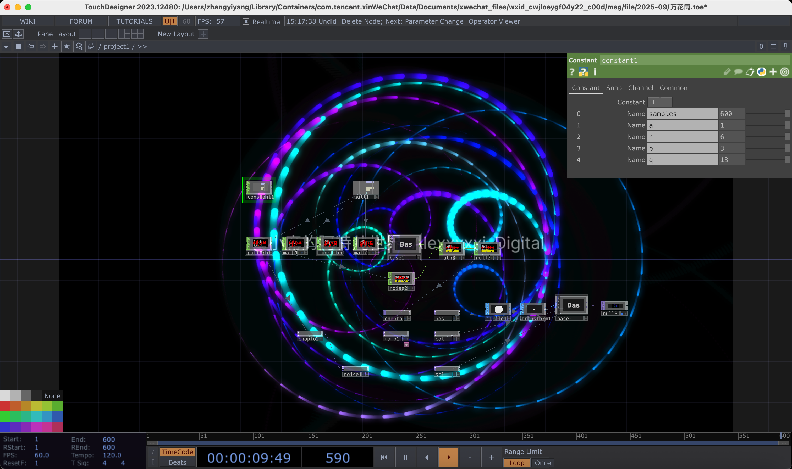
Everyday technology needs to stay simple for non-experts日常科技需要让非专业的人也能轻松上手日常科技需要讓非專業的人也能輕鬆上手日常のテクノロジーは、専門家でない人にもやさしくあるべきLa technologie du quotidien doit rester simple pour les non-spécialistesAlltagstechnik muss auch für Laien einfach bleiben
The research named a gap: sustainable technology often feels too complex for everyday users. The project framed it as a question: how might everyday technology be sustainable and simple enough for non-experts to adopt? Comfort Lamp plays a role in that answer. It puts home sensing into one familiar object, a lamp, and one signal, its colour, so people who never open an app still benefit.
研究指出了一个缺口：可持续科技对普通用户来说常常太复杂。项目把它写成一个问题：怎样让日常科技既可持续，又简单到非专业的人也愿意用？舒适灯是这个问题的一种回答。它把家居感测收进一个熟悉的物件，也就是一盏灯，再用一个信号，也就是颜色来表达，从来不打开应用的人也能受益。
研究指出了一個缺口：永續科技對一般使用者來說常常太複雜。專案把它寫成一個問題：怎樣讓日常科技既永續，又簡單到非專業的人也願意用？舒適燈是這個問題的一種回答。它把居家感測收進一個熟悉的物件，也就是一盞燈，再用一個訊號，也就是顏色來表達，從來不打開應用程式的人也能受益。
調査は一つのギャップを示しました。持続可能な技術は、一般の人には複雑すぎると感じられがちです。プロジェクトはこれを問いにしました。日常の技術を、持続可能で、専門家でない人も取り入れられるほど簡単にするにはどうすればよいか。コンフォートランプはその答えの一つです。住まいのセンシングを、ランプというなじみのある物と、色というひとつの信号にまとめるので、アプリを開かない人にも役立ちます。
La recherche a relevé un manque : la technologie durable paraît souvent trop complexe au quotidien. Le projet l’a formulé en question : comment rendre la technologie du quotidien à la fois durable et assez simple pour des non-spécialistes ? La lampe de confort joue un rôle dans cette réponse. Elle réunit la mesure du confort dans un objet familier, une lampe, et un seul signal, sa couleur, utile même à qui n’ouvre jamais d’application.
Die Recherche zeigte eine Lücke: Nachhaltige Technik wirkt im Alltag oft zu kompliziert. Das Projekt fasste das als Frage: Wie kann Alltagstechnik nachhaltig und zugleich so einfach sein, dass auch Laien sie nutzen? Die Wohlfühllampe ist ein Teil der Antwort. Sie bündelt die Raummessung in einem vertrauten Gegenstand, einer Lampe, und einem einzigen Signal, ihrer Farbe. So profitieren auch Menschen, die nie eine App öffnen.
The intended experience is a glance across the room期望的体验：隔着房间看一眼就够期望的體驗：隔著房間看一眼就夠目指す体験は、部屋の向こうからひと目見るだけL’expérience visée : un coup d’œil à travers la pièceDas Ziel: ein Blick quer durch den Raum genügt
Green means the room is comfortable. Blue, yellow and red signal cold, warm and hot. Near a threshold the light holds steady, so it never flickers between two colours. Most of the time the lamp stays in the background like any other light.
绿色表示房间舒适，蓝、黄、红分别表示冷、暖、热。接近临界值时灯光保持稳定，两种颜色之间不会来回闪。大部分时间，它就像一盏普通的灯，安静地待在背景里。
綠色表示房間舒適，藍、黃、紅分別表示冷、暖、熱。接近臨界值時燈光保持穩定，兩種顏色之間不會來回閃。大部分時間，它就像一盞普通的燈，安靜地待在背景裡。
緑は快適、青・黄・赤はそれぞれ寒い、暖かい、暑いを表します。しきい値の近くでも光は安定し、2 色の間でちらつきません。ふだんは普通の照明のように、背景に溶け込んでいます。
Le vert signifie que la pièce est confortable ; le bleu, le jaune et le rouge indiquent froid, chaud et très chaud. Près d’un seuil, la lumière reste stable et ne clignote jamais entre deux couleurs. La plupart du temps, la lampe se fait discrète comme n’importe quel luminaire.
Grün heißt: Der Raum ist angenehm. Blau, Gelb und Rot stehen für kalt, warm und heiß. Nahe einer Schwelle bleibt das Licht ruhig und springt nie zwischen zwei Farben hin und her. Meist bleibt die Lampe unauffällig im Hintergrund wie jede andere Leuchte.
Its form is a small lit staircase, like a book nook on a shelf它的形态是一座发光的小楼梯，像书架上的微缩书景它的形態是一座發光的小樓梯，像書架上的微縮書景かたちは光る小さな階段。本棚に置くブックヌックのようにSa forme : un petit escalier éclairé, comme un book nook sur une étagèreIhre Form: eine kleine beleuchtete Treppe, wie ein Book Nook im Regal
Group discussion in the final module concluded that an ambient lamp should live inside a scene. The enclosure adapts the Book Nook Stairs model from Thingiverse, with the staircases of M.C. Escher as a reference. A lit miniature space reads as decoration when nobody needs the data, and the colour of its light carries the comfort state. The earlier cardboard models used a classic desk lamp shape; the scene replaced it.
最后一个模块的小组讨论得出结论：氛围灯应该放进一个场景里。外壳改编自 Thingiverse 上的 Book Nook Stairs 模型，并参考了埃舍尔（M.C. Escher）的楼梯。一个发光的微缩空间，在没人需要数据时就是一件摆设，而它的光色承载着舒适度。早期的纸板模型用的是经典台灯造型，后来被这个场景取代。
最後一個模組的小組討論得出結論：氛圍燈應該放進一個場景裡。外殼改編自 Thingiverse 上的 Book Nook Stairs 模型，並參考了艾雪（M.C. Escher）的樓梯。一個發光的微縮空間，在沒人需要資料時就是一件擺飾，而它的光色承載著舒適度。早期的紙板模型用的是經典檯燈造型，後來被這個場景取代。
最終モジュールのグループ討議で、アンビエントランプはひとつの情景の中に置くべきだという結論になりました。筐体は Thingiverse の Book Nook Stairs モデルを改変したもので、M.C. エッシャーの階段を参考にしています。光る小さな空間は、データが要らないときは飾りとして見え、その光の色が快適さを伝えます。初期の段ボール模型は定番のデスクランプの形でしたが、この情景に置き換わりました。
En fin de parcours, la discussion de groupe a conclu qu’une lampe d’ambiance devait habiter une scène. Le boîtier adapte le modèle Book Nook Stairs de Thingiverse, avec les escaliers de M.C. Escher comme référence. Un petit espace éclairé se lit comme un objet décoratif quand personne n’a besoin des données, et la couleur de sa lumière porte l’état de confort. Les premières maquettes en carton reprenaient la silhouette classique d’une lampe de bureau ; la scène l’a remplacée.
Im letzten Modul kam die Gruppe zu dem Schluss, dass eine Stimmungslampe in einer Szene leben sollte. Das Gehäuse basiert auf dem Modell Book Nook Stairs von Thingiverse, mit den Treppen von M.C. Escher als Referenz. Ein beleuchteter Miniaturraum wirkt als Dekoration, solange niemand die Daten braucht, und die Farbe seines Lichts trägt den Komfortzustand. Die frühen Kartonmodelle hatten die klassische Form einer Schreibtischlampe; die Szene hat sie abgelöst.
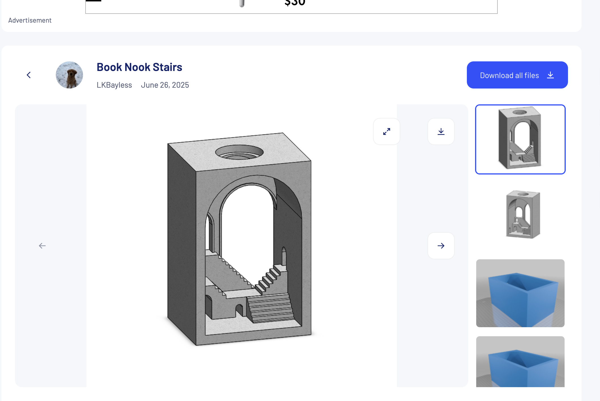
Research研究研究リサーチRechercheRecherche
Research covered trends, people, five group concepts and the sensing technology. Each one narrowed what the lamp should do.
研究涵盖趋势、人群、五个小组概念和感测技术，每一项都让这盏灯该做的事更聚焦。
研究涵蓋趨勢、人群、五個小組概念和感測技術，每一項都讓這盞燈該做的事更聚焦。
リサーチはトレンド、人、グループの 5 つのコンセプト、センシング技術にわたり、そのたびにランプの役割が絞り込まれました。
La recherche a couvert les tendances, les personnes, cinq concepts de groupe et la technologie de mesure. Chaque étape a resserré le rôle de la lampe.
Die Recherche umfasste Trends, Menschen, fünf Gruppenkonzepte und die Sensortechnik. Jeder Schritt schärfte, was die Lampe tun soll.
Two trends and two personas framed the problem两个趋势和两个用户画像界定了问题兩個趨勢和兩個人物誌界定了問題2 つのトレンドと 2 つのペルソナが課題を形づくったDeux tendances et deux personas ont cadré le problèmeZwei Trends und zwei Personas steckten das Problem ab
Solarpunk Futures covers sustainable, community-driven technology; its example case, Solar Protocol, is a solar-powered server network that moves hosting to the sunniest node. Nomadic Tech covers tools for people on the move, such as the ZOLEO satellite messenger. The Privacy Keepers want simple, safe technology they can control. The New Independents choose durable, repairable and transparent products. Solarpunk Futures and the Privacy Keepers shaped the lamp most directly.
“太阳朋克未来”关注可持续、社区驱动的科技，案例 Solar Protocol 是一个太阳能供电的服务器网络，会把托管转移到阳光最充足的节点。“游牧科技”关注移动人群的工具，例如 ZOLEO 卫星通信器。“隐私守护者”想要简单、安全、能自己掌控的科技；“新独立派”偏爱耐用、可维修、信息透明的产品。对这盏灯影响最直接的是太阳朋克未来和隐私守护者。
「太陽龐克未來」關注永續、社群驅動的科技，案例 Solar Protocol 是一個太陽能供電的伺服器網路，會把託管轉移到陽光最充足的節點。「遊牧科技」關注移動人群的工具，例如 ZOLEO 衛星通訊器。「隱私守護者」想要簡單、安全、能自己掌控的科技；「新獨立派」偏愛耐用、可維修、資訊透明的產品。對這盞燈影響最直接的是太陽龐克未來和隱私守護者。
Solarpunk Futures は持続可能でコミュニティ主導の技術を扱います。事例の Solar Protocol は、最も日当たりのよいノードへホスティングを移す太陽光駆動のサーバーネットワークです。Nomadic Tech は ZOLEO の衛星メッセンジャーのような、移動する人のための道具を扱います。Privacy Keepers はシンプルで安全、自分で管理できる技術を求め、New Independents は丈夫で修理でき、透明性のある製品を選びます。ランプに最も直接影響したのは Solarpunk Futures と Privacy Keepers です。
Solarpunk Futures porte sur une technologie durable et communautaire ; son cas d’exemple, Solar Protocol, est un réseau de serveurs solaires qui déplace l’hébergement vers le nœud le plus ensoleillé. Nomadic Tech porte sur les outils des personnes en mouvement, comme le messager satellite ZOLEO. Les Privacy Keepers veulent une technologie simple, sûre et sous leur contrôle. Les New Independents choisissent des produits durables, réparables et transparents. Solarpunk Futures et les Privacy Keepers ont le plus directement façonné la lampe.
Solarpunk Futures steht für nachhaltige, gemeinschaftlich getragene Technik; das Fallbeispiel Solar Protocol ist ein solarbetriebenes Servernetz, das das Hosting zum sonnigsten Knoten verlagert. Nomadic Tech steht für Werkzeuge für Menschen unterwegs, etwa den Satelliten-Messenger ZOLEO. Die Privacy Keepers wollen einfache, sichere Technik unter eigener Kontrolle. Die New Independents wählen langlebige, reparierbare und transparente Produkte. Am direktesten prägten Solarpunk Futures und die Privacy Keepers die Lampe.
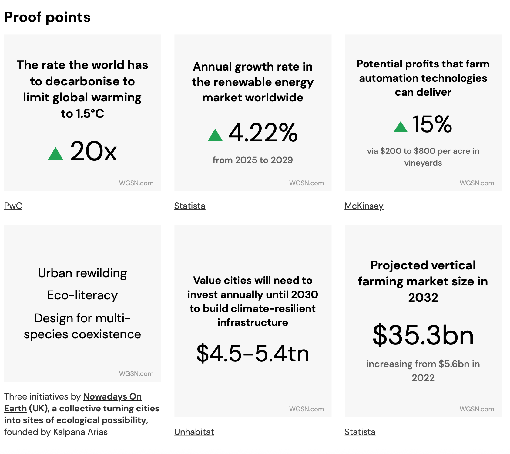
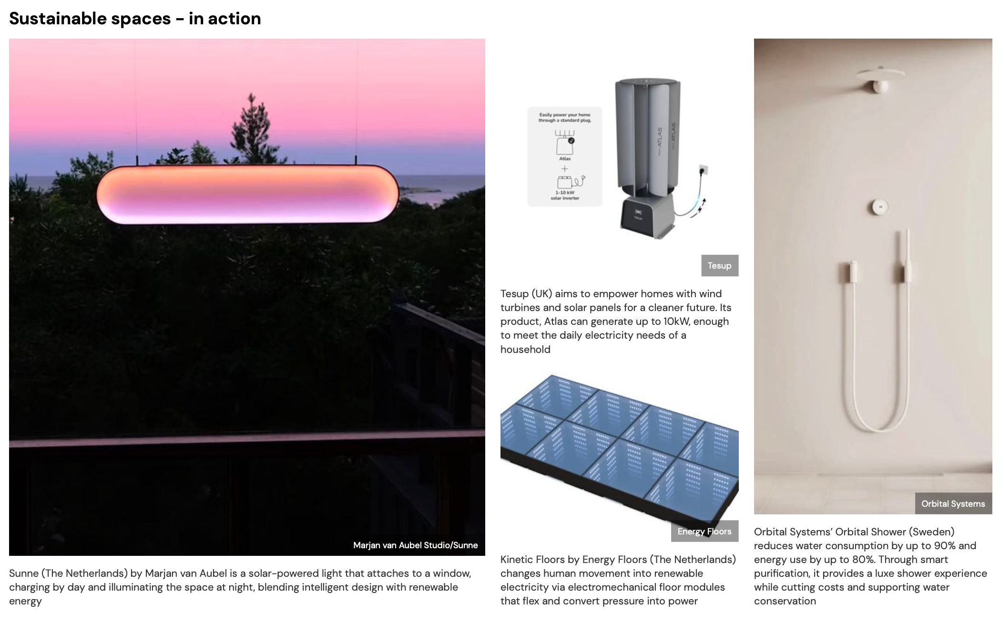
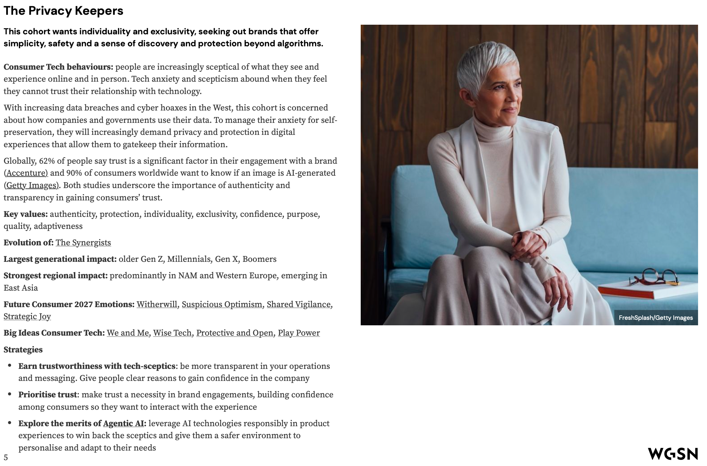
Five group concepts were reviewed, and the clearest ideas survived五个小组概念经过评审，最清晰的想法留了下来五個小組概念經過評審，最清晰的想法留了下來グループの 5 つのコンセプトを評価し、最も分かりやすいアイデアが残ったCinq concepts de groupe ont été évalués, et les idées les plus claires sont restéesFünf Gruppenkonzepte wurden bewertet, die klarsten Ideen blieben
In the second module the group started from a weather lamp and sketched five concepts. Feedback on each one decided what moved forward.
第二个模块的小组从“天气灯”出发，画出五个概念，每个概念收到的反馈决定了它的去留。
第二個模組的小組從「天氣燈」出發，畫出五個概念，每個概念收到的回饋決定了它的去留。
モジュール 2 のグループは「天気ランプ」から出発して 5 つのコンセプトを描き、それぞれへのフィードバックで次に進むものを決めました。
Au deuxième module, le groupe est parti d’une lampe météo et a esquissé cinq concepts. Les retours sur chacun ont décidé de la suite.
Im zweiten Modul ging die Gruppe von einer Wetterlampe aus und skizzierte fünf Konzepte. Das Feedback zu jedem entschied, was weiterkam.
| # | Concept概念概念コンセプトConceptKonzept | Feedback反馈回饋フィードバックRetourFeedback | Decision结果結果判断DécisionEntscheidung |
|---|---|---|---|
| 1 | Colour follows the weather; lights flash and sound plays as a hand approaches; a screen shows icons颜色随天气变化；手靠近时闪光并发声；屏幕显示图标顏色隨天氣變化；手靠近時閃光並發聲；螢幕顯示圖示色が天気に合わせて変わり、手を近づけると光が点滅して音が鳴り、画面にアイコンが出るLa couleur suit la météo ; lumières clignotantes et son à l’approche d’une main ; un écran affiche des icônesFarbe folgt dem Wetter; Licht blinkt und Ton spielt, wenn sich eine Hand nähert; ein Display zeigt Symbole | Interesting, but doing too much: keep the screen or the sound, one of the two有意思，但做得太多：屏幕和声音二选一有意思，但做得太多：螢幕和聲音二選一面白いが、やりすぎ。画面か音のどちらか一方に絞るIntéressant, mais trop chargé : garder l’écran ou le son, l’un des deuxInteressant, aber zu viel: Display oder Ton, eins von beiden | Kept, simplified保留并简化保留並簡化簡略化して採用Retenu, simplifiéBehalten, vereinfacht |
| 2 | A button shows outfit suggestions and weather colours on a screen按下按钮，屏幕显示穿搭建议和天气颜色按下按鈕，螢幕顯示穿搭建議和天氣顏色ボタンを押すと、画面に服装の提案と天気の色が出るUn bouton affiche des conseils de tenue et les couleurs de la météo sur un écranEin Knopf zeigt Outfit-Tipps und Wetterfarben auf einem Display | Solves two different problems; a weather lamp should focus on weather想解决两个不同的问题；天气灯应该专注于天气想解決兩個不同的問題；天氣燈應該專注於天氣2 つの別々の課題を解こうとしている。天気ランプは天気に集中すべきRésout deux problèmes différents ; une lampe météo doit se concentrer sur la météoLöst zwei verschiedene Probleme; eine Wetterlampe sollte beim Wetter bleiben | Dropped放弃放棄見送りÉcartéVerworfen |
| 3 | Turning a knob previews the next 12 hours of weather as a colour gradient转动旋钮，以渐变色预览未来 12 小时的天气轉動旋鈕，以漸層色預覽未來 12 小時的天氣ノブを回すと、今後 12 時間の天気がグラデーションで見えるTourner un bouton fait défiler les 12 prochaines heures de météo en dégradé de couleurEin Drehknopf zeigt die nächsten 12 Stunden Wetter als Farbverlauf | The winner: it helps people plan the day, and the colours are easy to read最佳方案：帮人规划一天，颜色也容易读懂最佳方案：幫人規劃一天，顏色也容易讀懂一番の案。1 日の計画に役立ち、色も読みやすいLe gagnant : il aide à planifier la journée et les couleurs se lisent facilementDer Favorit: hilft, den Tag zu planen, und die Farben sind leicht zu lesen | Favourite; needed live forecast data首选；需要实时预报数据首選；需要即時預報資料最有力。リアルタイムの予報データが必要Favori ; demandait des prévisions en directFavorit; brauchte Live-Vorhersagedaten |
| 4 | Light follows ambient brightness and turns warm on cloudy days; a touch switches modes灯光跟随环境亮度，阴天变暖色；触摸切换模式燈光跟隨環境亮度，陰天變暖色；觸控切換模式光が周囲の明るさに合わせ、曇りの日は暖色に。タッチでモード切り替えLa lumière suit la luminosité ambiante et se réchauffe par temps couvert ; un toucher change de modeLicht folgt der Umgebungshelligkeit und wird bei Wolken wärmer; Berühren wechselt den Modus | Simple, close to a regular lamp; good for testing automatic features简单，接近普通台灯；适合测试自动功能簡單，接近普通檯燈；適合測試自動功能シンプルで普通のランプに近い。自動機能のテストに向くSimple, proche d’une lampe ordinaire ; utile pour tester les fonctions automatiquesEinfach, nah an einer normalen Lampe; gut zum Testen automatischer Funktionen | Kept: light sensor and touch control保留：光线传感器和触摸控制保留：光線感測器和觸控採用：光センサーとタッチ操作Retenu : capteur de lumière et commande tactileBehalten: Lichtsensor und Touch-Bedienung |
| 5 | Breathing light rhythms reflect the weather; a swipe changes modes呼吸般的灯光节奏反映天气；滑动切换模式呼吸般的燈光節奏反映天氣；滑動切換模式呼吸のような光のリズムで天気を表し、スワイプでモード切り替えDes rythmes lumineux de respiration traduisent la météo ; un glissement change de modeAtmende Lichtrhythmen zeigen das Wetter; Wischen wechselt den Modus | Too vague: hard to tell what the lamp is saying太模糊：很难看出灯在表达什么太模糊：很難看出燈在表達什麼あいまいすぎて、ランプが何を伝えているのか分かりにくいTrop vague : difficile de comprendre ce que dit la lampeZu vage: schwer zu erkennen, was die Lampe sagt | Dropped放弃放棄見送りÉcartéVerworfen |
The final lamp combines the colour states of concept 1, without the flashing and sound, with the light sensor and touch control of concept 4. Concept 3 needed live forecast data. The team researched a weather API without success, so the lamp measures the room itself.
最终的灯结合了概念 1 的颜色状态（去掉闪光和声音）和概念 4 的光线传感器与触摸控制。概念 3 需要实时预报数据，团队调研了天气 API，但没有成功，所以灯改为直接测量房间。
最終的燈結合了概念 1 的顏色狀態（去掉閃光和聲音）和概念 4 的光線感測器與觸控。概念 3 需要即時預報資料，團隊調研了天氣 API，但沒有成功，所以燈改為直接測量房間。
最終的なランプは、コンセプト 1 の色の状態（点滅と音は省略）と、コンセプト 4 の光センサーとタッチ操作を組み合わせています。コンセプト 3 にはリアルタイムの予報データが必要でした。チームは天気 API を調べましたが実を結ばず、ランプは部屋を直接計測する形になりました。
La lampe finale réunit les états de couleur du concept 1, sans clignotement ni son, et le capteur de lumière et la commande tactile du concept 4. Le concept 3 demandait des prévisions en direct. L’équipe a étudié une API météo sans succès : la lampe mesure donc directement la pièce.
Die fertige Lampe verbindet die Farbzustände von Konzept 1, ohne Blinken und Ton, mit Lichtsensor und Touch-Bedienung aus Konzept 4. Konzept 3 brauchte Live-Vorhersagedaten. Die Recherche zu einer Wetter-API blieb ohne Erfolg, daher misst die Lampe den Raum selbst.
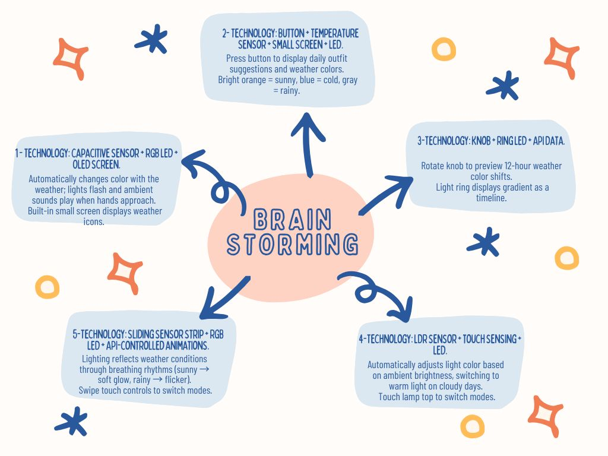
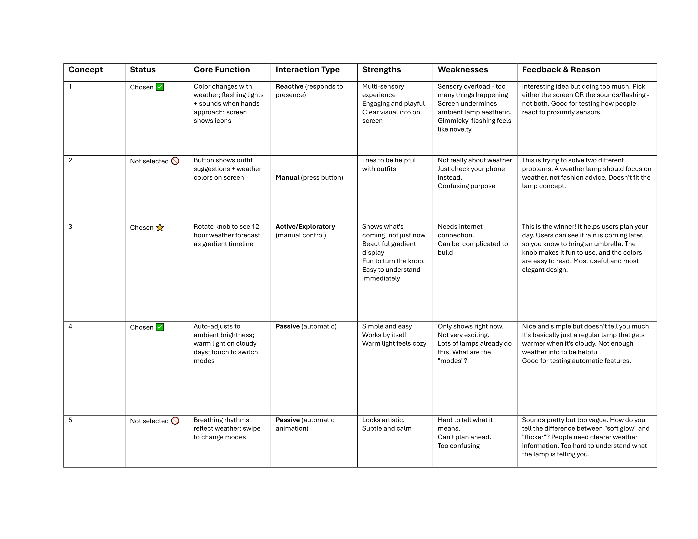
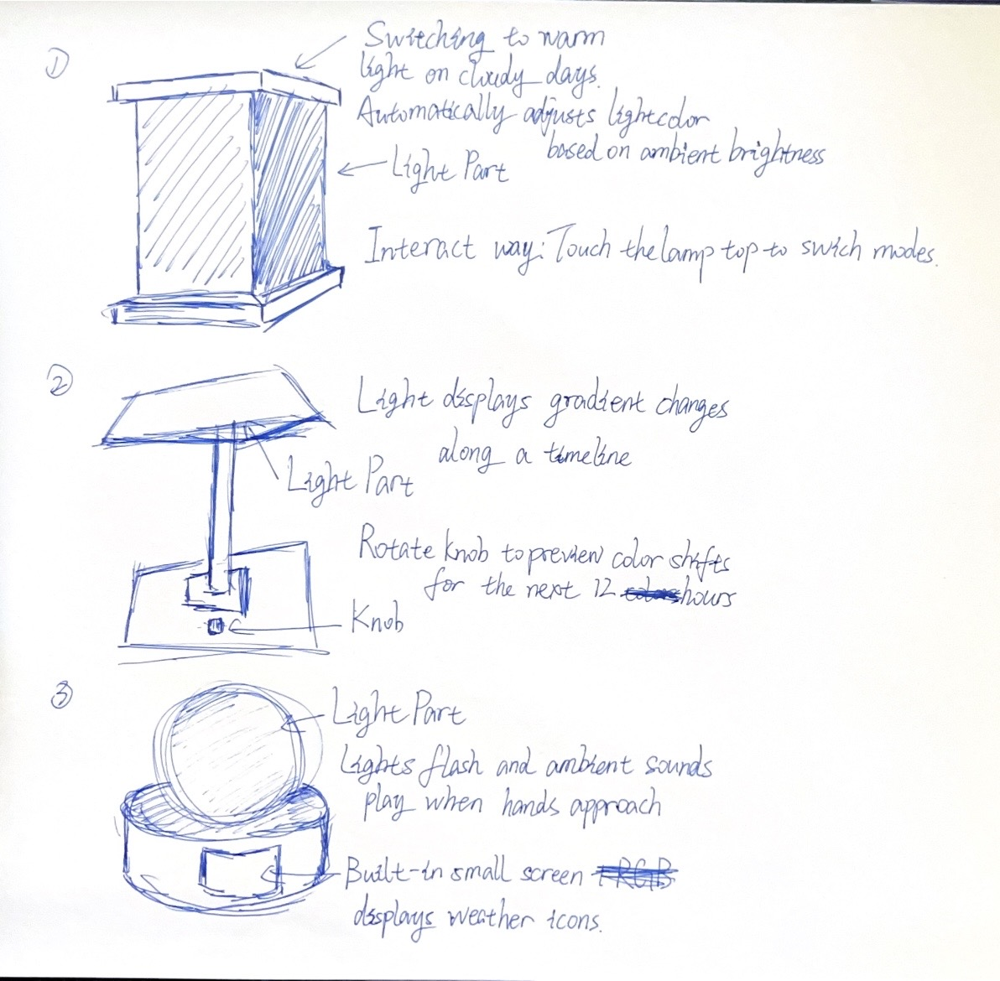
Proven parts and published guides set the technical base成熟的元件和公开的指南奠定了技术基础成熟的元件和公開的指南奠定了技術基礎実績のある部品と公開ガイドが技術の土台になったDes composants éprouvés et des guides publiés ont posé la base techniqueBewährte Bauteile und veröffentlichte Anleitungen bildeten die technische Basis
A DHT11 sensor reads temperature and humidity and needs about one second per sample. Adafruit’s DHT and NeoPixel guides set the wiring and code patterns. The heat index and wind chill references of the US National Weather Service informed where comfort ends. ProtoPie talks to the Arduino over a serial connection, which lets a phone show live data.
DHT11 传感器读取温度和湿度，每次采样约需一秒。Adafruit 的 DHT 和 NeoPixel 指南确定了接线和代码写法。美国国家气象局的酷热指数和风寒指数为“舒适”的边界提供了参考。ProtoPie 通过串口与 Arduino 通信，手机因此可以显示实时数据。
DHT11 感測器讀取溫度和濕度，每次取樣約需一秒。Adafruit 的 DHT 和 NeoPixel 指南確定了接線和程式寫法。美國國家氣象局的酷熱指數和風寒指數為「舒適」的邊界提供了參考。ProtoPie 透過序列埠與 Arduino 通訊，手機因此可以顯示即時資料。
DHT11 センサーは温度と湿度を読み取り、1 回の計測に約 1 秒かかります。配線とコードの書き方は Adafruit の DHT と NeoPixel のガイドに従いました。快適さの境目は、米国立気象局の暑さ指数とウインドチルを参考にしました。ProtoPie はシリアル通信で Arduino とつながり、スマホでライブデータを表示できます。
Un capteur DHT11 mesure température et humidité, à raison d’environ une mesure par seconde. Les guides DHT et NeoPixel d’Adafruit ont fixé le câblage et le code. L’indice de chaleur et le refroidissement éolien du National Weather Service américain ont servi de repères pour les limites du confort. ProtoPie communique avec l’Arduino par liaison série, ce qui permet au téléphone d’afficher les données en direct.
Ein DHT11-Sensor misst Temperatur und Luftfeuchte und braucht etwa eine Sekunde pro Messung. Die DHT- und NeoPixel-Anleitungen von Adafruit legten Verkabelung und Code fest. Hitzeindex und Windchill des US National Weather Service dienten als Referenz für die Grenzen des Komforts. ProtoPie spricht über eine serielle Verbindung mit dem Arduino, so zeigt ein Handy Live-Daten.
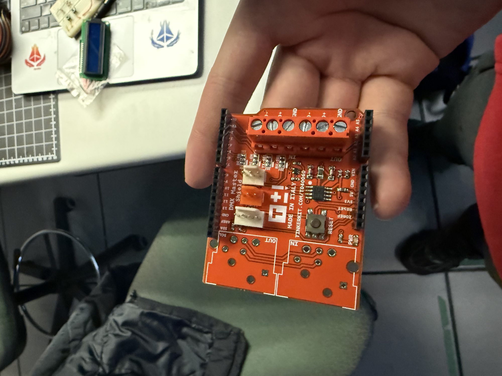
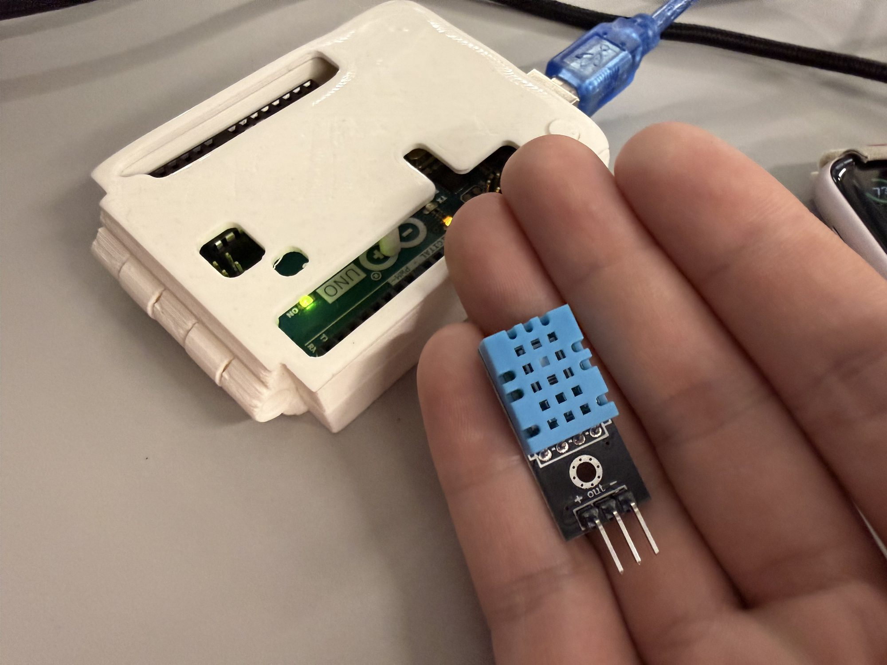
Process过程過程プロセスDémarcheProzess
The lamp developed over three modules, from first circuits to a working prototype to a finished object. Each round of tests answered one question.
这盏灯在三个模块中成形：从第一批电路，到可运行的原型，再到成品。每一轮测试回答一个问题。
這盞燈在三個模組中成形：從第一批電路，到可運作的原型，再到成品。每一輪測試回答一個問題。
ランプは 3 つのモジュールを通して、最初の回路から動くプロトタイプ、そして完成品へと進みました。テストのたびにひとつの問いに答えています。
La lampe s’est construite en trois modules : premiers circuits, prototype fonctionnel, puis objet fini. Chaque série de tests a répondu à une question.
Die Lampe entstand in drei Modulen: von ersten Schaltungen über einen funktionierenden Prototyp zum fertigen Objekt. Jede Testrunde beantwortete eine Frage.
Module 1: first circuits proved that a live signal can steer colour模块 1：最初的电路证明实时信号可以驱动颜色模組 1：最初的電路證明即時訊號可以驅動顏色モジュール 1：最初の回路で、ライブ信号が色を動かせると確かめたModule 1 : les premiers circuits montrent qu’un signal en direct peut piloter la couleurModul 1: Erste Schaltungen zeigen, dass ein Live-Signal Farbe steuern kann
Blink sketches, external LEDs and a push button built the basics. ProtoPie was connected to the board, and in TouchDesigner a potentiometer drove the size and hue of a circle in real time.
Blink 程序、外接 LED 和按钮打下了基础。ProtoPie 接上了开发板；在 TouchDesigner 里，电位器实时控制圆的大小和色相。
Blink 程式、外接 LED 和按鈕打下了基礎。ProtoPie 接上了開發板；在 TouchDesigner 裡，可變電阻即時控制圓的大小和色相。
Blink スケッチ、外付け LED、押しボタンで基礎を固めました。ProtoPie をボードにつなぎ、TouchDesigner ではポテンショメーターで円の大きさと色相をリアルタイムに動かしました。
Des sketchs Blink, des LED externes et un bouton-poussoir ont posé les bases. ProtoPie a été relié à la carte, et dans TouchDesigner un potentiomètre réglait en direct la taille et la teinte d’un cercle.
Blink-Sketche, externe LEDs und ein Taster legten die Grundlagen. ProtoPie wurde mit dem Board verbunden, und in TouchDesigner steuerte ein Potentiometer Größe und Farbton eines Kreises in Echtzeit.
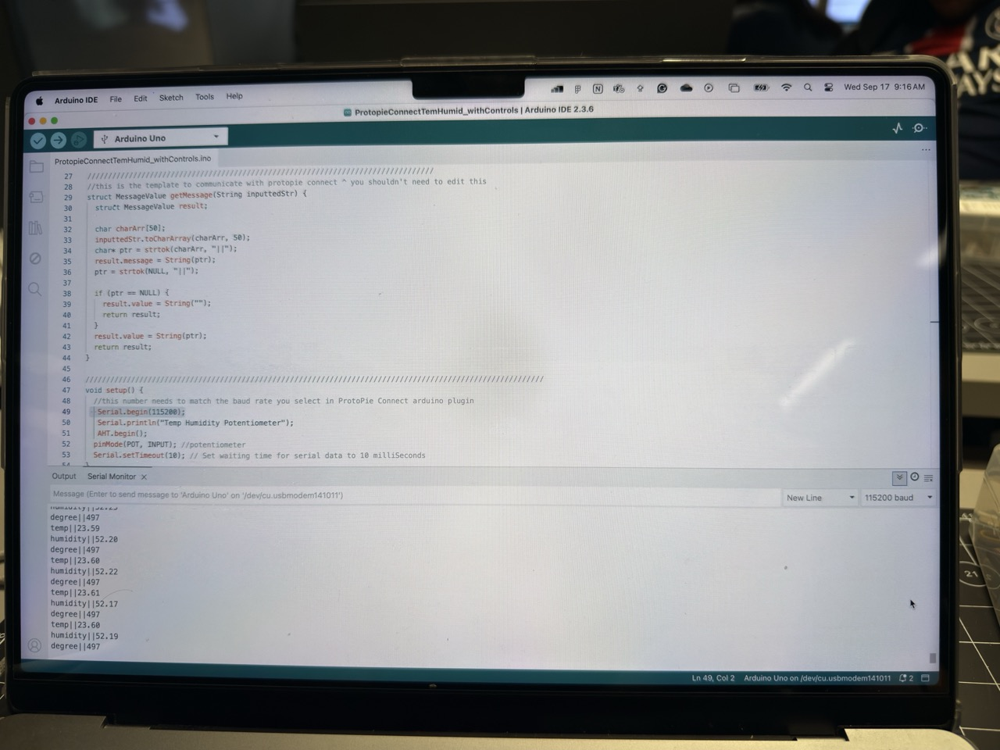
Cardboard models settled the size and balance纸板模型确定了尺寸和重心紙板模型確定了尺寸和重心段ボール模型でサイズとバランスを決めたLes maquettes en carton ont fixé la taille et l’équilibreKartonmodelle klärten Größe und Balance
A cartoon lamp icon set the proportions between shade, post and base. The first cardboard skeleton wobbled where the post met the base, and a trial shade tipped the model forward. Version 2 got a larger base, bracing on the load side and channels for future cables. An earlier cardboard stand followed the same path, from a narrow first version to a wider base with a rear wedge.
一个卡通台灯图标确定了灯罩、灯杆和底座的比例。第一版纸板骨架在灯杆和底座的连接处晃动，试装的灯罩又让模型往前倾。第二版加大了底座，在受力一侧加了支撑，并为以后的走线留了通道。更早的一个纸板支架也走过同样的路，从窄底的第一版改成带后部楔块的宽底座。
一個卡通檯燈圖示確定了燈罩、燈桿和底座的比例。第一版紙板骨架在燈桿和底座的連接處晃動，試裝的燈罩又讓模型往前傾。第二版加大了底座，在受力一側加了支撐，並為以後的走線留了通道。更早的一個紙板支架也走過同樣的路，從窄底的第一版改成帶後部楔塊的寬底座。
ランプのイラストで、シェード、支柱、台座の比率を決めました。最初の段ボールの骨組みは支柱と台座の接合部がぐらつき、試作のシェードを付けると前に傾きました。2 つ目の版では台座を大きくし、荷重側に補強を入れ、将来の配線用に溝を残しました。それ以前の段ボールスタンドも同じ流れで、幅の狭い初版から、後ろにくさびを入れた広い台座へと改良されています。
Une icône de lampe a fixé les proportions entre abat-jour, pied et socle. Le premier squelette en carton vacillait à la jonction du pied et du socle, et un abat-jour d’essai faisait basculer la maquette vers l’avant. La version 2 a reçu un socle plus grand, un renfort côté charge et des passages pour les futurs câbles. Un support en carton réalisé plus tôt a suivi le même chemin, d’une première version étroite à un socle élargi avec une cale arrière.
Ein Lampensymbol legte die Proportionen von Schirm, Stange und Fuß fest. Das erste Kartongerüst wackelte an der Verbindung von Stange und Fuß, und ein Testschirm kippte das Modell nach vorn. Version 2 bekam einen größeren Fuß, eine Verstrebung auf der Lastseite und Kanäle für spätere Kabel. Ein früherer Kartonständer ging denselben Weg, von einer schmalen ersten Version zu einem breiten Fuß mit Keil hinten.
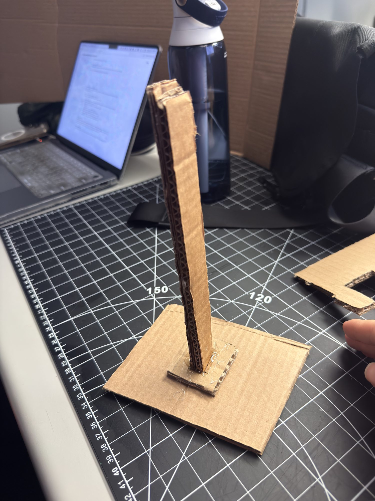
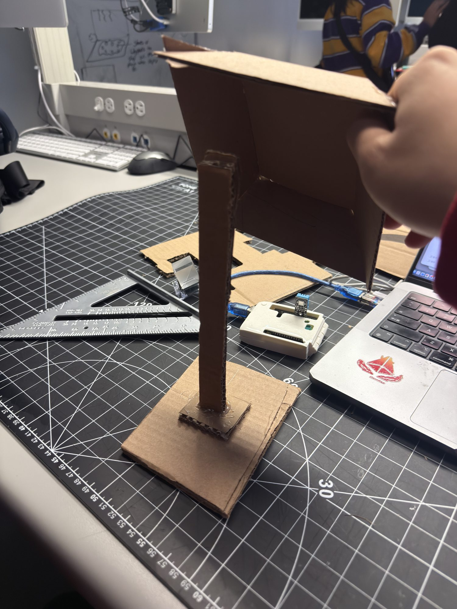
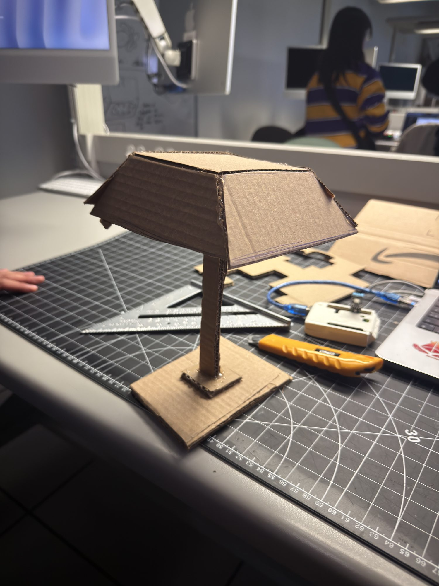
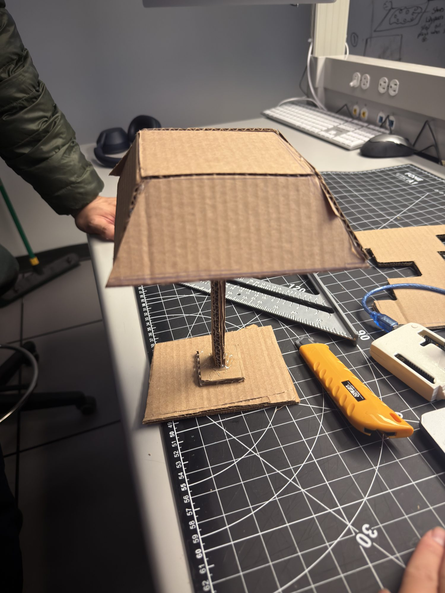
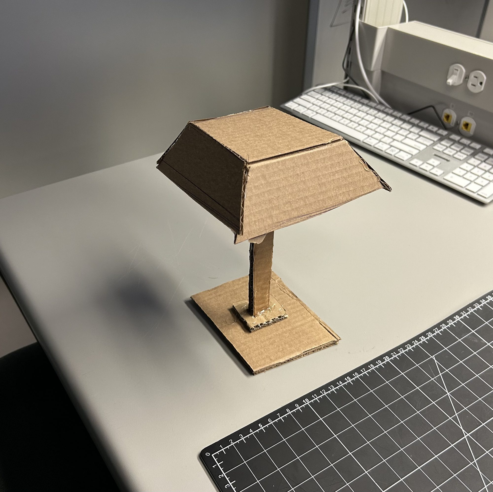
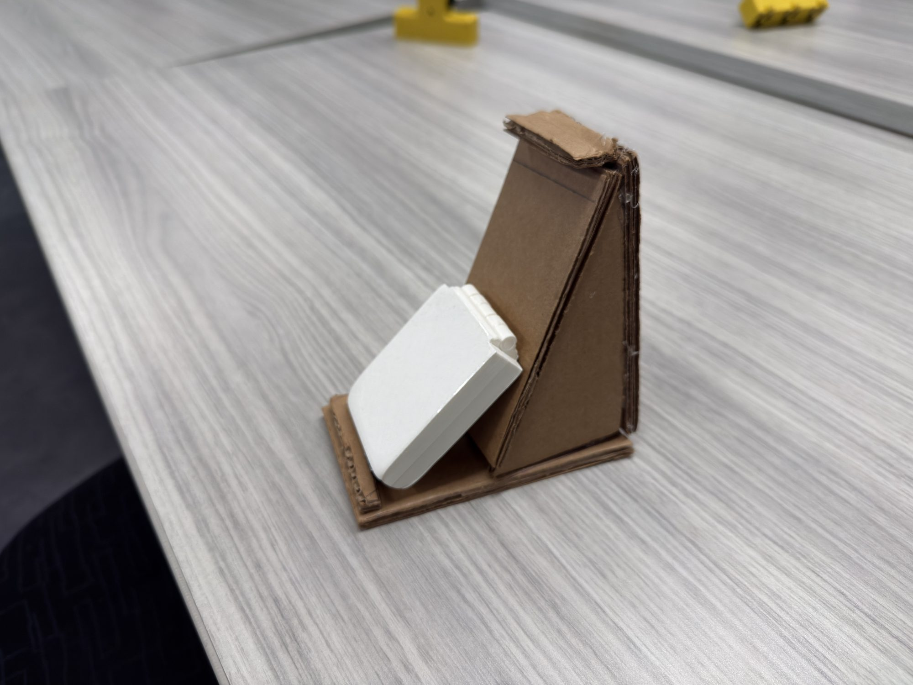
Sensor tests turned noisy readings into four stable tiers传感器测试把不稳定的读数变成四个稳定的档位感測器測試把不穩定的讀數變成四個穩定的檔位センサーテストで、乱れた値を安定した 4 段階に整えたLes tests de capteur ont changé des mesures bruitées en quatre paliers stablesSensortests machten aus unruhigen Messwerten vier stabile Stufen
Early DHT11 readings showed NaN spikes, caused by polling too often and a loose jumper wire. Reading every one to two seconds and reseating the connectors made the data stable. The Arduino then mapped temperature to four colour tiers with a ±0.7 °C hysteresis band, so the light holds its colour near a boundary. During testing, an LCD1602 displayed the raw values to verify each tier.
早期的 DHT11 读数出现 NaN 尖峰，原因是读取过于频繁，加上一根跳线松动。改为每 1 到 2 秒读取一次，并重新插紧接头后，数据稳定了。Arduino 随后把温度映射到四个颜色档位，并设置 ±0.7 °C 的回差，接近边界时灯光保持原色。测试期间用 LCD1602 显示原始数值，核对每个档位。
早期的 DHT11 讀數出現 NaN 尖峰，原因是讀取過於頻繁，加上一根跳線鬆動。改為每 1 到 2 秒讀取一次，並重新插緊接頭後，資料穩定了。Arduino 隨後把溫度對應到四個顏色檔位，並設定 ±0.7 °C 的遲滯區間，接近邊界時燈光保持原色。測試期間用 LCD1602 顯示原始數值，核對每個檔位。
初期の DHT11 の値には NaN のスパイクが出ました。読み取りの頻度が高すぎたことと、ジャンパー線のゆるみが原因です。読み取りを 1 から 2 秒ごとにし、コネクターを差し直すとデータが安定しました。続いて Arduino で温度を 4 段階の色に対応させ、±0.7 °C のヒステリシスを設けて、境目の近くでも色が保たれるようにしました。テスト中は LCD1602 に生の値を表示して各段階を確認しました。
Les premières mesures du DHT11 présentaient des pics NaN, dus à des lectures trop fréquentes et à un fil de liaison mal enfoncé. Une lecture toutes les une à deux secondes et des connecteurs remis en place ont stabilisé les données. L’Arduino a ensuite associé la température à quatre paliers de couleur, avec une hystérésis de ±0,7 °C pour que la lumière garde sa couleur près d’une limite. Pendant les tests, un écran LCD1602 affichait les valeurs brutes pour vérifier chaque palier.
Die ersten DHT11-Werte zeigten NaN-Ausreißer, verursacht durch zu häufiges Abfragen und eine lockere Steckbrücke. Eine Messung alle ein bis zwei Sekunden und neu gesteckte Verbinder machten die Daten stabil. Danach ordnete der Arduino die Temperatur vier Farbstufen zu, mit ±0,7 °C Hysterese, damit das Licht nahe einer Grenze seine Farbe hält. Während der Tests zeigte ein LCD1602 die Rohwerte, um jede Stufe zu prüfen.
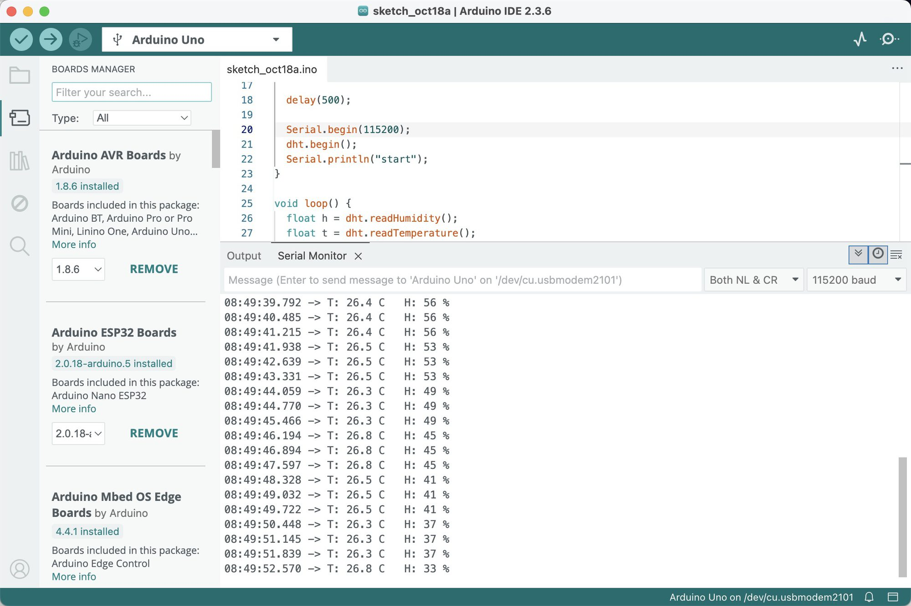
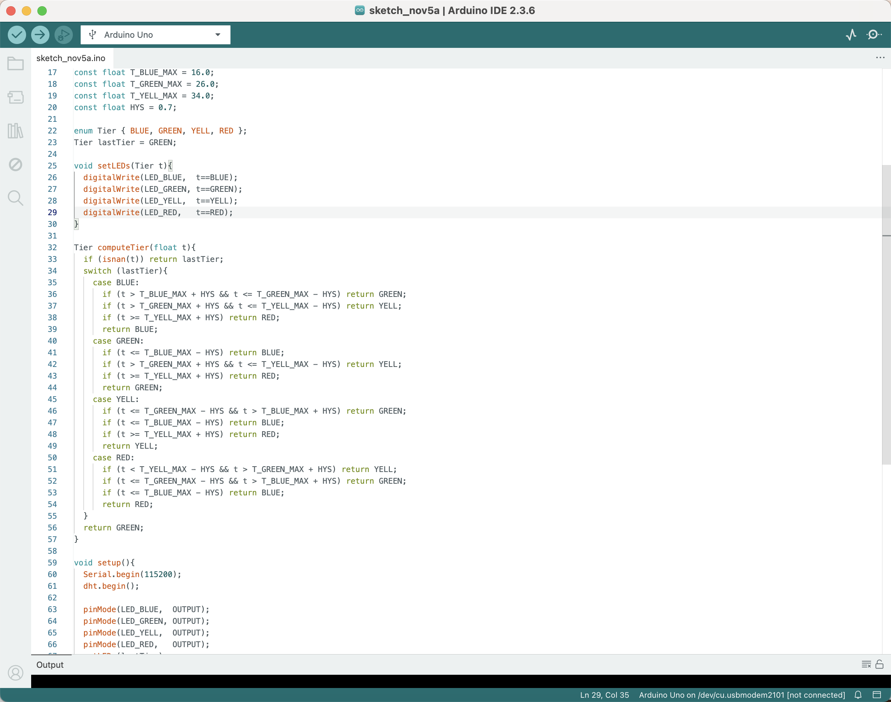
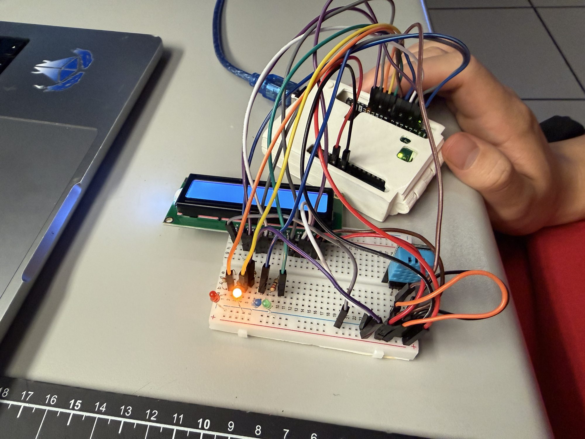
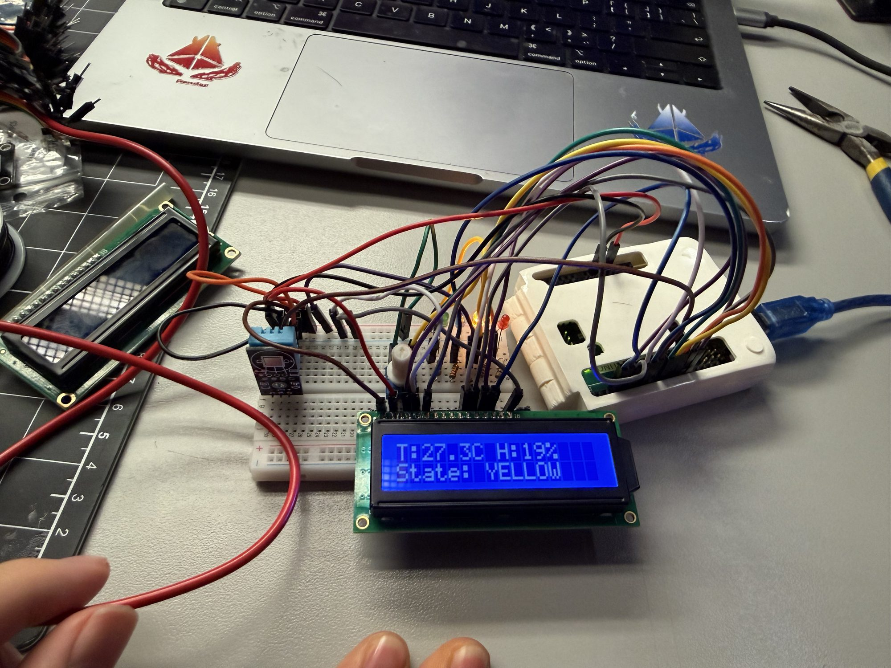
Peer feedback moved the interface onto the phone同学反馈把界面移到了手机上同學回饋把介面移到了手機上仲間のフィードバックで、インターフェースをスマホへ移したLes retours des pairs ont déplacé l’interface sur le téléphonePeer-Feedback verlegte die Oberfläche aufs Handy
Peers asked for a knob for brightness, a button to cycle colours and ambient sound. Audio from an Arduino is low in quality, so the plan moved the interface and the sound to ProtoPie on a phone and kept the lamp itself simple.
同学希望加入调亮度的旋钮、切换颜色的按钮和环境音。Arduino 的音质很低，于是计划把界面和声音移到手机上的 ProtoPie，让灯本身保持简单。
同學希望加入調亮度的旋鈕、切換顏色的按鈕和環境音。Arduino 的音質很低，於是計畫把介面和聲音移到手機上的 ProtoPie，讓燈本身保持簡單。
仲間からは、明るさ調整のノブ、色を切り替えるボタン、環境音の要望が出ました。Arduino の音質は低いため、インターフェースと音はスマホの ProtoPie に移し、ランプ本体はシンプルに保つ計画にしました。
Les pairs ont demandé un bouton rotatif pour la luminosité, un bouton pour changer de couleur et un son d’ambiance. Le son d’un Arduino est de faible qualité : le plan a donc confié l’interface et le son à ProtoPie sur téléphone, et gardé la lampe simple.
Peers wünschten einen Drehknopf für die Helligkeit, einen Knopf zum Farbwechsel und Umgebungsklang. Ein Arduino liefert nur schwachen Klang, deshalb wanderten Oberfläche und Ton zu ProtoPie aufs Handy, und die Lampe selbst blieb einfach.
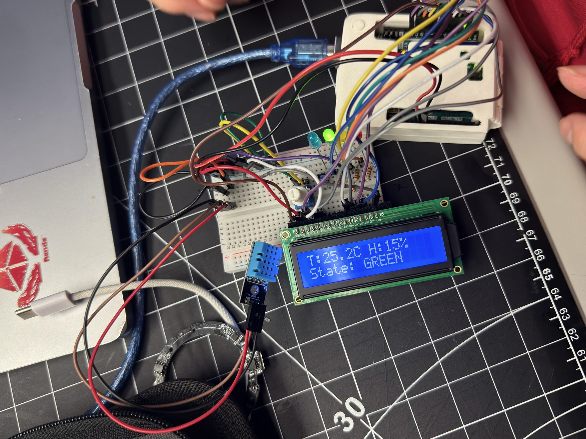
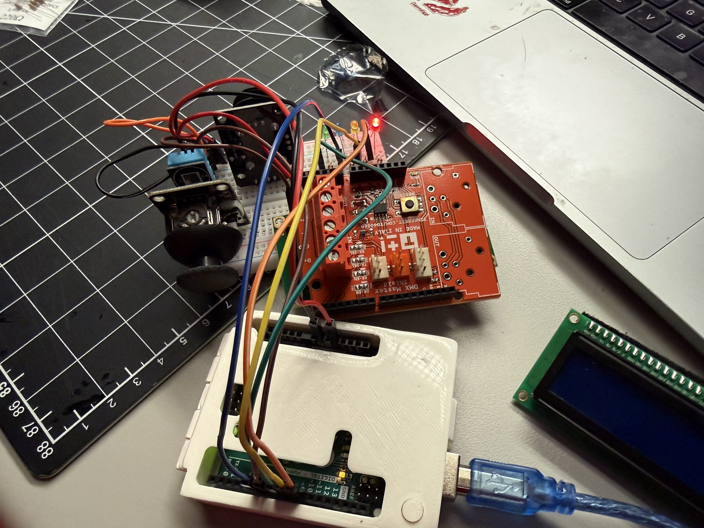
A role-play tested how calm signals build trust角色扮演检验了平静的信号如何建立信任角色扮演檢驗了平靜的訊號如何建立信任ロールプレイで、穏やかな合図が信頼を生む過程を確かめたUn jeu de rôle a montré comment des signaux calmes créent la confianceEin Rollenspiel zeigte, wie ruhige Signale Vertrauen schaffen
In a bodystorming workshop, Minh, Valerii and Keegan acted out a clinic visit. The scene examined how eye contact, body language, tone and digital tools create trust and comfort. The lamp follows the same goal: one steady, gentle signal for everyone in the room, with details available on request.
在一次身体风暴（bodystorming）工作坊中，Minh、Valerii 和 Keegan 演了一场看诊。这场演练观察眼神接触、肢体语言、语气和数字工具如何建立信任和安心感。这盏灯遵循同一个目标：给房间里每个人一个稳定、温和的信号，细节则按需查看。
在一次身體風暴（bodystorming）工作坊中，Minh、Valerii 和 Keegan 演了一場看診。這場演練觀察眼神接觸、肢體語言、語氣和數位工具如何建立信任和安心感。這盞燈遵循同一個目標：給房間裡每個人一個穩定、溫和的訊號，細節則按需查看。
ボディストーミングのワークショップで、Minh、Valerii、Keegan が診察の場面を演じました。アイコンタクト、身ぶり、声のトーン、デジタルツールがどう信頼と安心を生むかを観察しています。ランプも同じ目標に沿っています。部屋にいる全員に安定した穏やかな合図を送り、詳細は必要なときに見られるようにします。
Lors d’un atelier de bodystorming, Minh, Valerii et Keegan ont joué une consultation médicale. La scène observait comment le regard, la gestuelle, le ton et les outils numériques créent la confiance et le réconfort. La lampe suit le même objectif : un signal stable et doux pour toute la pièce, avec le détail à la demande.
In einem Bodystorming-Workshop spielten Minh, Valerii und Keegan einen Arztbesuch nach. Die Szene untersuchte, wie Blickkontakt, Körpersprache, Tonfall und digitale Werkzeuge Vertrauen und Ruhe schaffen. Die Lampe folgt demselben Ziel: ein stetiges, sanftes Signal für alle im Raum, Details auf Wunsch.
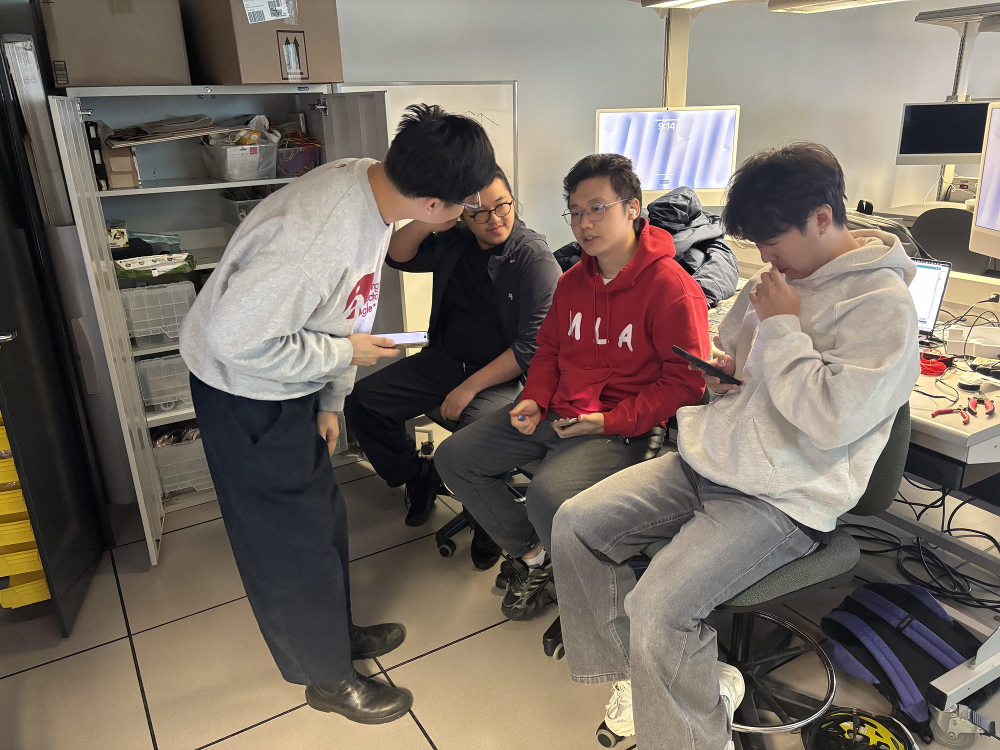
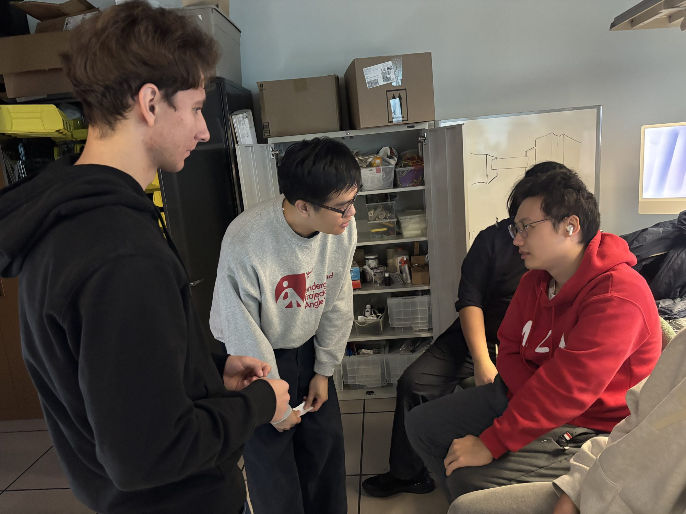
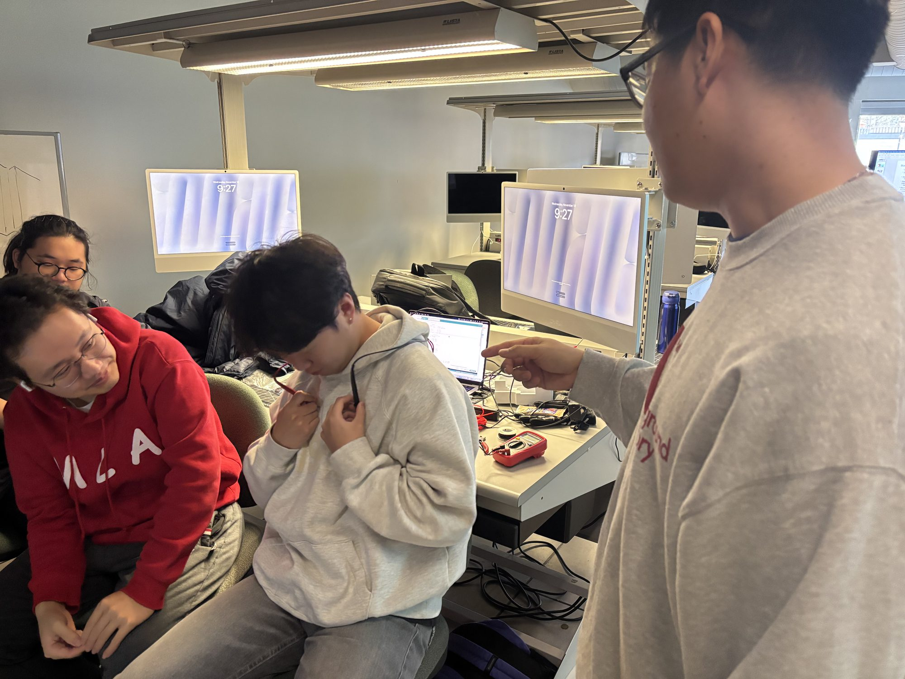
The enclosure was redesigned and printed to hold the electronics外壳经过重新设计并打印，用来容纳电子元件外殼經過重新設計並列印，用來容納電子元件電子部品を収めるため、筐体を設計し直して印刷したLe boîtier a été redessiné et imprimé pour loger l’électroniqueDas Gehäuse wurde umkonstruiert und gedruckt, um die Elektronik aufzunehmen
In CAD, the Book Nook Stairs model gained an open interior, a slot for the Arduino and space at the back for wiring and the DHT sensor. It was printed on an Ultimaker. Wall thickness and overhangs needed tuning, and the ceiling height and opening size changed how clearly each colour tier read.
在 CAD 里，Book Nook Stairs 模型被改出开放的内部空间、一个放 Arduino 的槽位，以及背面走线和放 DHT 传感器的空间，再用 Ultimaker 打印。壁厚和悬垂需要反复调整；顶部高度和开口大小会影响每个颜色档位的辨识度。
在 CAD 裡，Book Nook Stairs 模型被改出開放的內部空間、一個放 Arduino 的槽位，以及背面走線和放 DHT 感測器的空間，再用 Ultimaker 列印。壁厚和懸空結構需要反覆調整；頂部高度和開口大小會影響每個顏色檔位的辨識度。
CAD で Book Nook Stairs モデルに、開いた内部空間、Arduino を差し込むスロット、背面の配線と DHT センサー用のスペースを加え、Ultimaker で印刷しました。壁の厚みとオーバーハングは調整が必要で、天井の高さと開口の大きさが各段階の色の見やすさを左右しました。
Dans le logiciel de CAO, le modèle Book Nook Stairs a reçu un intérieur ouvert, un logement pour l’Arduino et de la place à l’arrière pour le câblage et le capteur DHT. Il a été imprimé sur une Ultimaker. L’épaisseur des parois et les porte-à-faux ont demandé des réglages, et la hauteur du plafond comme la taille des ouvertures changeaient la lisibilité de chaque palier de couleur.
Im CAD erhielt das Modell Book Nook Stairs einen offenen Innenraum, einen Schacht für den Arduino und Platz auf der Rückseite für Kabel und den DHT-Sensor. Gedruckt wurde es auf einem Ultimaker. Wandstärke und Überhänge mussten angepasst werden, und Deckenhöhe und Öffnungsgröße veränderten, wie klar jede Farbstufe zu erkennen war.
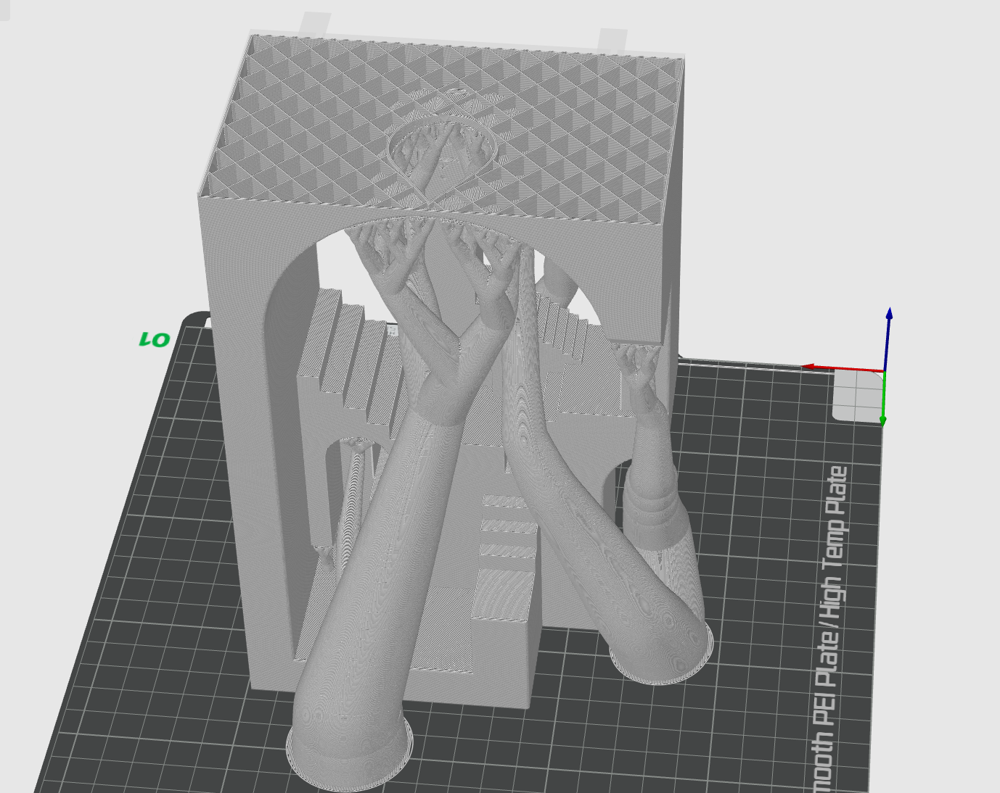
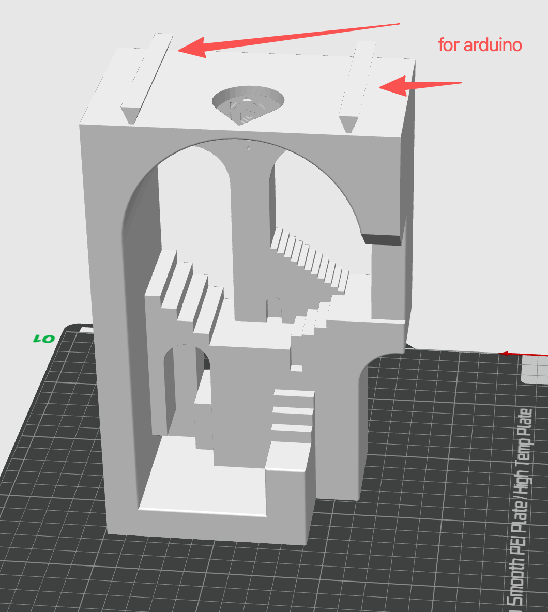
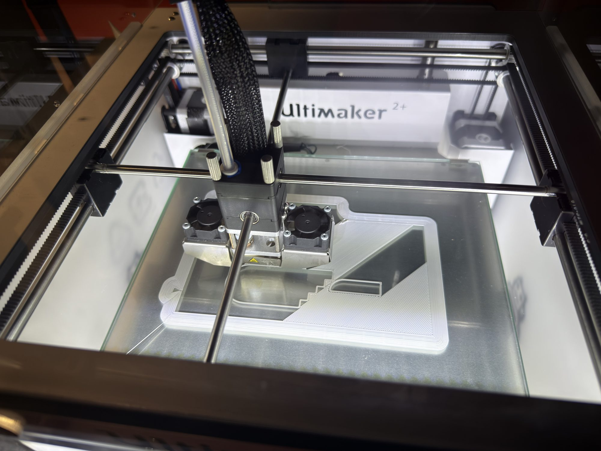
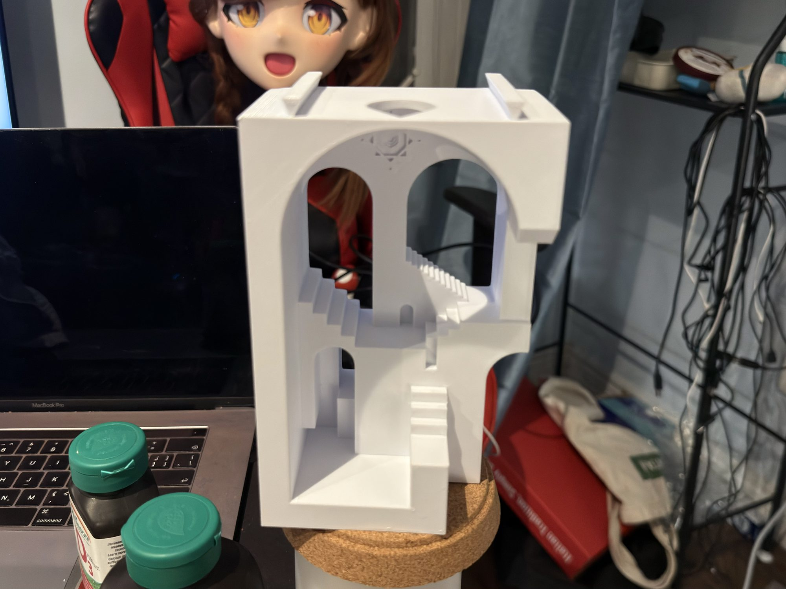
Light tests placed the LED ring for a soft, even glow灯光测试为 LED 灯环找到了柔和均匀的位置燈光測試為 LED 燈環找到了柔和均勻的位置光のテストで、やわらかく均一に光る LED リングの位置を決めたLes essais de lumière ont placé l’anneau LED pour une lueur douce et égaleLichttests fanden die Position des LED-Rings für ein weiches, gleichmäßiges Leuchten
Wires were extended and soldered, with a connector for the light ring. Green, orange and magenta were tested inside the housing, and the ring was moved until the light formed a soft gradient. The tests also showed that a sensor in shadow reads differently, so the sensors sit on the side of the housing.
导线经过加长和焊接，并为灯环加了接头。在外壳里测试了绿、橙、品红三种颜色，并移动灯环，直到光线形成柔和的渐变。测试还发现，处在阴影里的传感器读数会变化，所以传感器被安排在外壳侧面。
導線經過加長和焊接，並為燈環加了接頭。在外殼裡測試了綠、橙、洋紅三種顏色，並移動燈環，直到光線形成柔和的漸層。測試還發現，處在陰影裡的感測器讀數會變化，所以感測器被安排在外殼側面。
配線を延長してはんだ付けし、光リング用のコネクターを付けました。筐体の中で緑、オレンジ、マゼンタを試し、光がやわらかなグラデーションになるまでリングを動かしました。影に入ったセンサーは値が変わることも分かったため、センサーは筐体の側面に配置しています。
Les fils ont été rallongés et soudés, avec un connecteur pour l’anneau lumineux. Le vert, l’orange et le magenta ont été testés dans le boîtier, et l’anneau déplacé jusqu’à obtenir un dégradé doux. Les essais ont aussi montré qu’un capteur à l’ombre mesure autrement : les capteurs sont donc placés sur le côté du boîtier.
Kabel wurden verlängert und verlötet, dazu ein Stecker für den Lichtring. Grün, Orange und Magenta wurden im Gehäuse getestet, und der Ring wanderte, bis das Licht einen weichen Verlauf bildete. Die Tests zeigten auch, dass ein Sensor im Schatten anders misst, deshalb sitzen die Sensoren seitlich am Gehäuse.
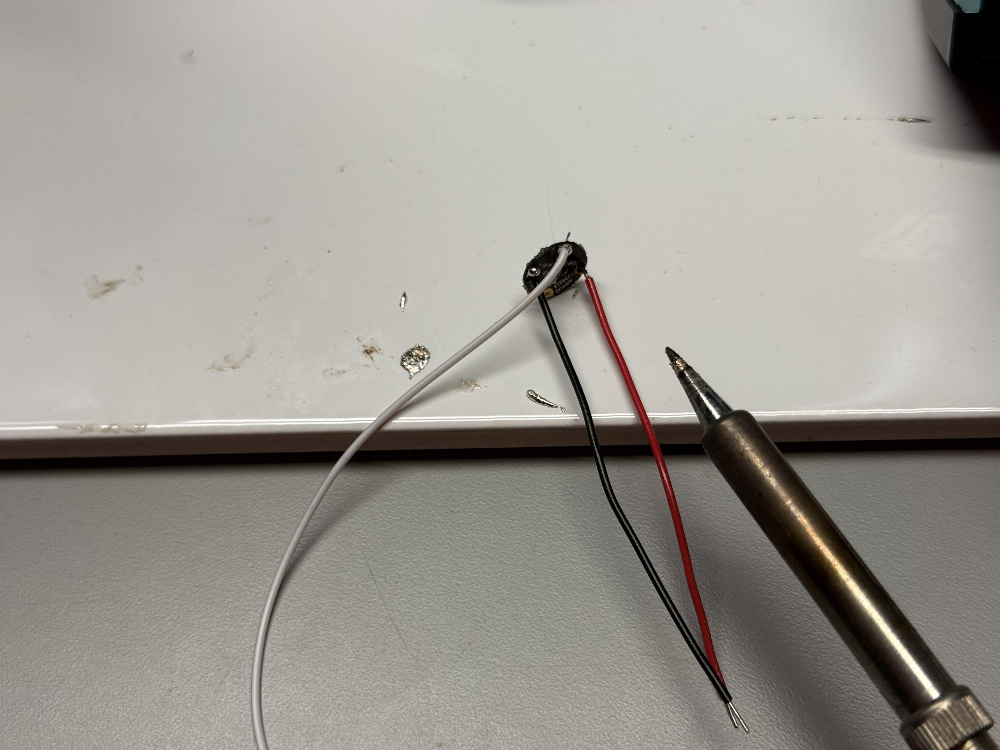
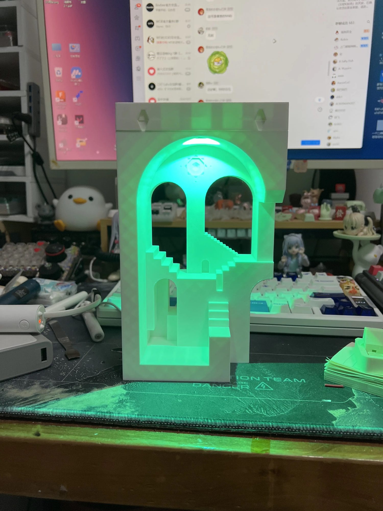
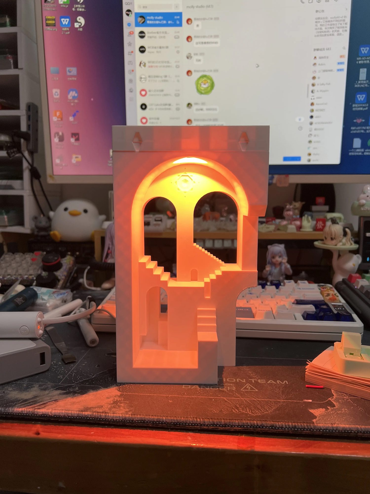
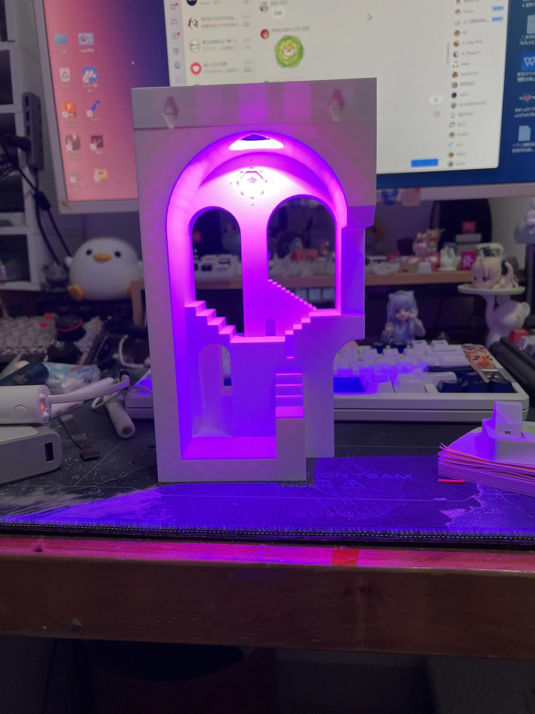
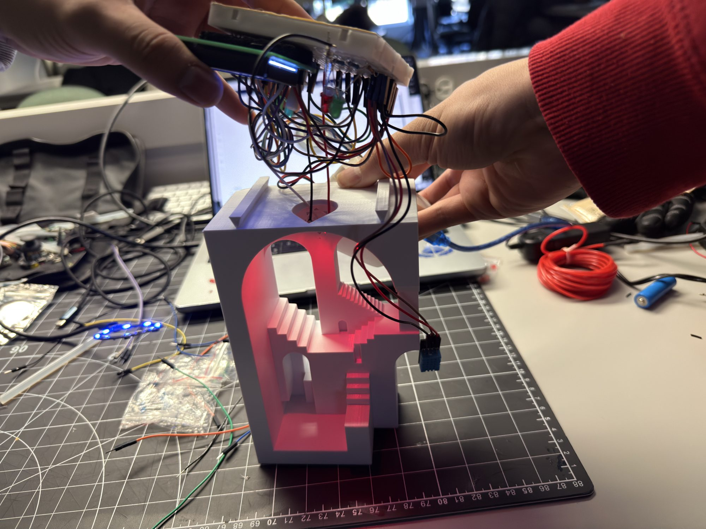
The last round simplified the controls最后一轮简化了操作最後一輪簡化了操作最後の段階で操作をシンプルにしたLa dernière étape a simplifié les commandesDie letzte Runde vereinfachte die Bedienung
The LCD was removed, since the phone now shows the numbers. A light sensor (LDR) was added to follow ambient brightness, and a latching touch switch was added because a lamp should always have a clear on and off control. Cable reach was tested with the electronics in place.
LCD 被移除，因为数字已经交给手机显示。新增光敏电阻（LDR）来跟随环境亮度，又加了一个自锁触摸开关，因为一盏灯始终应该有清楚的开和关。最后在装好电子元件的状态下测试了线长。
LCD 被移除，因為數字已經交給手機顯示。新增光敏電阻（LDR）來跟隨環境亮度，又加了一個自鎖觸控開關，因為一盞燈始終應該有清楚的開和關。最後在裝好電子元件的狀態下測試了線長。
数値はスマホで見られるようになったため、LCD を外しました。周囲の明るさに合わせる光センサー（LDR）を加え、ランプには常に分かりやすいオンとオフが必要なので、ラッチ式のタッチスイッチも加えました。最後に電子部品を収めた状態でケーブルの長さを確かめました。
L’écran LCD a été retiré, puisque le téléphone affiche désormais les chiffres. Une photorésistance (LDR) a été ajoutée pour suivre la luminosité ambiante, ainsi qu’un interrupteur tactile à verrouillage, car une lampe doit toujours offrir une commande marche et arrêt claire. La longueur des câbles a été testée avec l’électronique en place.
Das LCD fiel weg, denn die Zahlen zeigt jetzt das Handy. Ein Lichtsensor (LDR) kam hinzu, der der Umgebungshelligkeit folgt, dazu ein rastender Touch-Schalter, weil eine Lampe immer ein klares An und Aus braucht. Die Kabellänge wurde mit eingebauter Elektronik getestet.
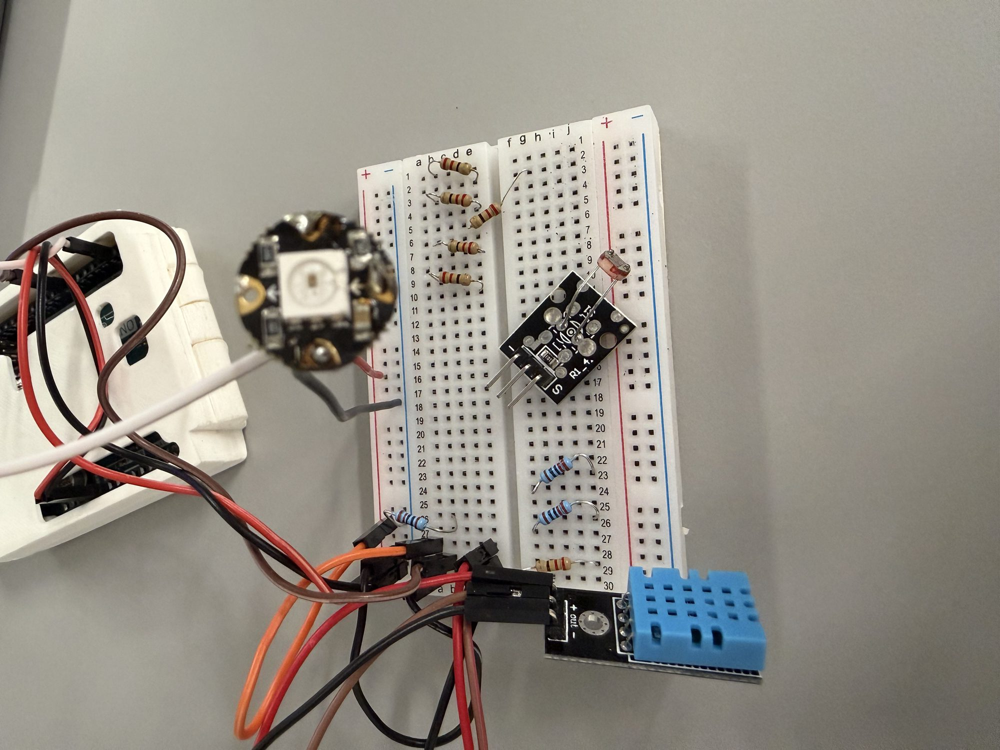
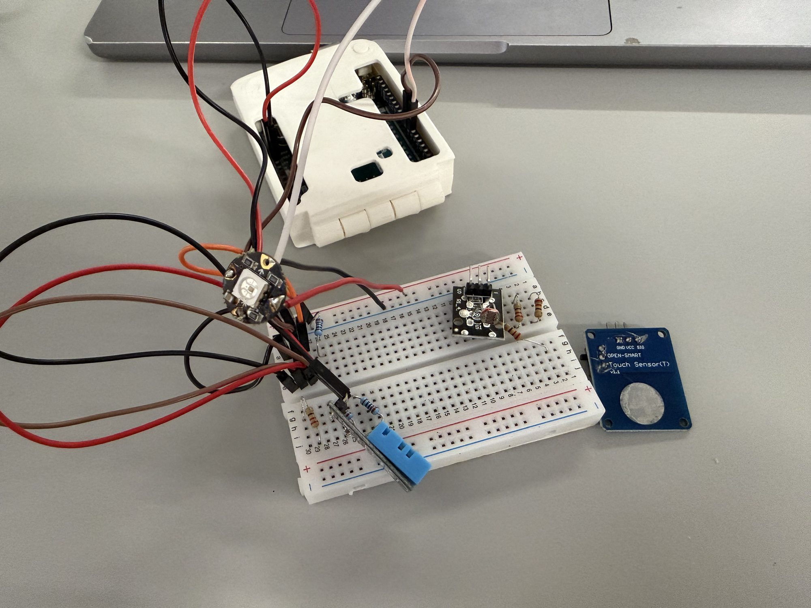
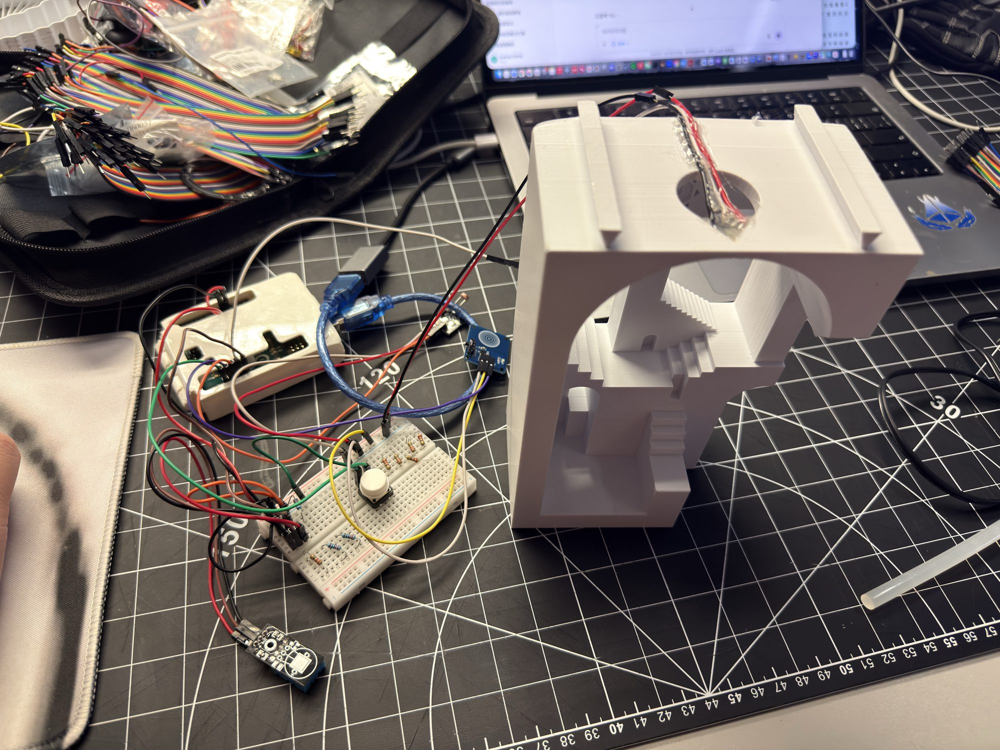
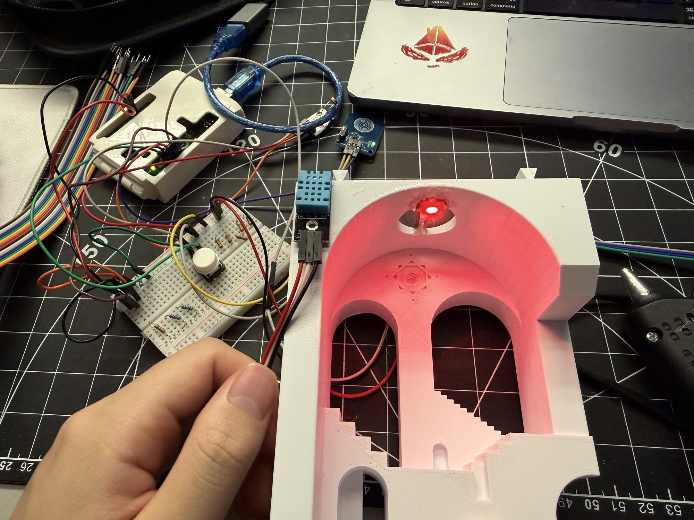
Outcome成果成果成果RésultatErgebnis
The result is a working lamp: a lit staircase scene that shows room comfort in colour, with a phone app for detail and control.
最终成果是一盏可运行的灯：一个发光的楼梯场景，用颜色显示房间舒适度，手机应用负责细节和控制。
最終成果是一盞可運作的燈：一個發光的樓梯場景，用顏色顯示房間舒適度，手機應用程式負責細節和控制。
成果は動作するランプです。光る階段のシーンが部屋の快適さを色で示し、スマホアプリが詳細と操作を受け持ちます。
Le résultat est une lampe qui fonctionne : une scène d’escalier éclairée qui affiche le confort de la pièce en couleur, avec une application mobile pour le détail et les commandes.
Das Ergebnis ist eine funktionierende Lampe: eine beleuchtete Treppenszene, die das Raumklima als Farbe zeigt, mit einer Handy-App für Details und Steuerung.
The lamp is built from six parts这盏灯由六个部分组成這盞燈由六個部分組成ランプは 6 つの部品でできているLa lampe se compose de six élémentsDie Lampe besteht aus sechs Teilen
The numbers in the drawing match the list. Everything except the phone lives in or on the printed scene.
图中的编号与列表对应。除了手机，所有部件都装在打印场景的内部或表面。
圖中的編號與列表對應。除了手機，所有部件都裝在列印場景的內部或表面。
図の番号は一覧と対応しています。スマホ以外の部品は、すべて印刷したシーンの内側か表面に付いています。
Les numéros du dessin renvoient à la liste. Tout, sauf le téléphone, se trouve dans la scène imprimée ou sur elle.
Die Nummern in der Zeichnung entsprechen der Liste. Alles außer dem Handy sitzt in oder an der gedruckten Szene.
- Staircase and arch shell楼梯与拱门外壳樓梯與拱門外殼階段とアーチの外殻Coque escalier et archeTreppen- und Bogenhülle3D-printed scene; spreads the light and hides the electronics3D 打印的场景，散开灯光，藏起电子元件3D 列印的場景，散開燈光，藏起電子元件3D プリントのシーン。光を広げ、電子部品を隠すScène imprimée en 3D ; diffuse la lumière et cache l’électronique3D-gedruckte Szene; verteilt das Licht und verbirgt die Elektronik
- RGB LED ringRGB LED 灯环RGB LED 燈環RGB LED リングAnneau LED RGBRGB-LED-RingSits inside the scene and shows the comfort colour装在场景内部，显示舒适度颜色裝在場景內部，顯示舒適度顏色シーンの内側にあり、快適さの色を表示Placé dans la scène, il affiche la couleur du confortSitzt in der Szene und zeigt die Komfortfarbe
- DHT11 sensorDHT11 传感器DHT11 感測器DHT11 センサーCapteur DHT11DHT11-SensorOn the side; reads temperature and humidity装在侧面，读取温度和湿度裝在側面，讀取溫度和濕度側面に配置。温度と湿度を計測Sur le côté ; mesure température et humiditéSeitlich; misst Temperatur und Luftfeuchte
- Light sensor (LDR)光敏电阻（LDR）光敏電阻（LDR）光センサー（LDR）Photorésistance (LDR)Lichtsensor (LDR)On the side; follows ambient brightness装在侧面，跟随环境亮度裝在側面，跟隨環境亮度側面に配置。周囲の明るさに追従Sur le côté ; suit la luminosité ambianteSeitlich; folgt der Umgebungshelligkeit
- Latching touch switch自锁触摸开关自鎖觸控開關ラッチ式タッチスイッチInterrupteur tactile à verrouillageRastender Touch-SchalterTurns the lamp on and off with one touch轻触一下即可开灯或关灯輕觸一下即可開燈或關燈ワンタッチでオンとオフを切り替えAllume et éteint la lampe d’un toucherSchaltet die Lampe mit einer Berührung an und aus
- ArduinoArduinoArduinoArduinoArduinoArduinoIn a slot at the back; runs the tier logic and talks to the phone插在背面的槽位里，运行档位逻辑并与手机通信插在背面的槽位裡，執行檔位邏輯並與手機通訊背面のスロットに収納。段階のロジックを動かし、スマホと通信Dans un logement à l’arrière ; gère les paliers et dialogue avec le téléphoneIm Schacht auf der Rückseite; steuert die Stufen und spricht mit dem Handy
Each reading travels from the room to the light每次读数都从房间传到灯光每次讀數都從房間傳到燈光測定値は部屋から光へと伝わるChaque mesure va de la pièce à la lumièreJeder Messwert wandert vom Raum ins Licht
The lamp runs on its own. The phone joins the loop through the Arduino whenever someone opens the app.
这盏灯可以独立运行。有人打开应用时，手机通过 Arduino 加入这条回路。
這盞燈可以獨立運作。有人打開應用程式時，手機透過 Arduino 加入這條迴路。
ランプは単独で動きます。誰かがアプリを開くと、スマホが Arduino を通してこの流れに加わります。
La lampe fonctionne seule. Le téléphone rejoint la boucle par l’Arduino dès qu’on ouvre l’application.
Die Lampe läuft allein. Das Handy kommt über den Arduino dazu, sobald jemand die App öffnet.
Four colours, each with one meaning四种颜色，各有一个含义四種顏色，各有一個含義4 つの色に、それぞれひとつの意味Quatre couleurs, une signification chacuneVier Farben, jede mit einer Bedeutung
Temperature sets the colour tier, and the light sensor responds to the brightness of the room. The phone app shows the live temperature and humidity.
温度决定颜色档位，光敏电阻响应房间亮度。手机应用显示实时温度和湿度。
溫度決定顏色檔位，光敏電阻回應房間亮度。手機應用程式顯示即時溫度和濕度。
温度が色の段階を決め、光センサーは部屋の明るさに反応します。スマホアプリにはリアルタイムの温度と湿度が表示されます。
La température fixe le palier de couleur, et la photorésistance réagit à la luminosité de la pièce. L’application affiche la température et l’humidité en direct.
Die Temperatur bestimmt die Farbstufe, der Lichtsensor reagiert auf die Helligkeit im Raum. Die Handy-App zeigt Temperatur und Luftfeuchte live.
Using the lamp takes four steps使用这盏灯只需四步使用這盞燈只需四步使い方は 4 ステップLa lampe s’utilise en quatre gestesDie Bedienung hat vier Schritte
The steps follow a typical day at a desk or bookshelf at home.
下面的步骤对应在家中书桌或书架旁的日常使用。
下面的步驟對應在家中書桌或書架旁的日常使用。
家の机や本棚のそばでの、ふだんの使い方に沿った手順です。
Les étapes suivent une journée ordinaire, la lampe posée sur un bureau ou une étagère.
Die Schritte folgen einem normalen Tag mit der Lampe auf Schreibtisch oder Regal.
- Touch the switch on the side to turn the lamp on.轻触侧面的开关，打开灯。輕觸側面的開關，打開燈。側面のスイッチに触れて点灯します。Toucher l’interrupteur sur le côté pour allumer la lampe.Den Schalter an der Seite berühren, um die Lampe einzuschalten.
- Glance at the colour. Green means the room is comfortable.看一眼颜色。绿色表示房间舒适。看一眼顏色。綠色表示房間舒適。色をひと目見ます。緑なら部屋は快適です。Jeter un œil à la couleur : vert, la pièce est confortable.Auf die Farbe schauen. Grün heißt: Der Raum ist angenehm.
- When the colour changes, the room has crossed a comfort tier, and it is time to adjust it, for example by opening a window.颜色变了，说明房间跨过了一个舒适档位，这时可以调整房间，比如开窗。顏色變了，表示房間跨過了一個舒適檔位，這時可以調整房間，比如開窗。色が変わったら、部屋が快適さの段階をまたいだ合図です。窓を開けるなどして調整します。Quand la couleur change, la pièce a franchi un palier : c’est le moment d’agir, par exemple en ouvrant une fenêtre.Wechselt die Farbe, hat der Raum eine Komfortstufe überschritten; Zeit, etwas zu ändern, etwa ein Fenster zu öffnen.
- Open the phone app for exact values, to change modes or to send a command to the lamp.打开手机应用，查看精确数值、切换模式或向灯发送指令。打開手機應用程式，查看精確數值、切換模式或向燈發送指令。スマホアプリを開くと、正確な値の確認、モードの切り替え、ランプへの指令ができます。Ouvrir l’application mobile pour les valeurs exactes, changer de mode ou envoyer une commande à la lampe.Die Handy-App öffnen, um genaue Werte zu sehen, den Modus zu wechseln oder der Lampe einen Befehl zu senden.
The lamp handles the glance, the phone handles the detail灯负责一眼看懂，手机负责细节燈負責一眼看懂，手機負責細節ひと目はランプ、詳細はスマホLa lampe pour le coup d’œil, le téléphone pour le détailDie Lampe für den Blick, das Handy für die Details
The lamp works on its own as a passive display: no screen, no app and no numbers to read. The phone adds an active layer. It shows live values, switches modes and sends commands back to the Arduino. The same object serves a quick check from across the room and a closer look when someone wants one. When nobody needs the data, it stays a small lit scene on the shelf.
灯可以单独作为被动显示使用：没有屏幕，没有应用，也没有要读的数字。手机加上一层主动交互：显示实时数值、切换模式，并把指令传回 Arduino。同一个物件，既能让人隔着房间快速确认，也能在需要时细看。没人需要数据时，它就是书架上一个发光的小场景。
燈可以單獨作為被動顯示使用：沒有螢幕，沒有應用程式，也沒有要讀的數字。手機加上一層主動互動：顯示即時數值、切換模式，並把指令傳回 Arduino。同一個物件，既能讓人隔著房間快速確認，也能在需要時細看。沒人需要資料時，它就是書架上一個發光的小場景。
ランプは単体で受動的な表示として働きます。画面もアプリも、読むべき数字もありません。スマホは能動的な層を加え、ライブの数値を表示し、モードを切り替え、Arduino へ指令を返します。同じ物が、部屋の向こうからの素早い確認にも、必要なときのじっくりした確認にも応えます。データが要らないときは、本棚の上の小さな光る情景です。
La lampe fonctionne seule comme affichage passif : ni écran, ni application, ni chiffres à lire. Le téléphone ajoute une couche active : il affiche les valeurs en direct, change de mode et renvoie des commandes à l’Arduino. Le même objet sert au coup d’œil depuis l’autre bout de la pièce et à l’examen détaillé quand on le souhaite. Quand personne n’a besoin des données, elle reste une petite scène éclairée sur l’étagère.
Die Lampe arbeitet allein als passive Anzeige: kein Display, keine App, keine Zahlen. Das Handy fügt eine aktive Ebene hinzu: Es zeigt Live-Werte, wechselt Modi und sendet Befehle an den Arduino zurück. Dasselbe Objekt dient dem schnellen Blick quer durch den Raum und dem genauen Hinsehen, wenn man es möchte. Braucht niemand die Daten, bleibt sie eine kleine beleuchtete Szene im Regal.
Next: test the colours with real users下一步：请真实用户测试颜色下一步：請真實使用者測試顏色次は、実際のユーザーと色をテストするProchaine étape : tester les couleurs avec de vrais utilisateursNächster Schritt: die Farben mit echten Nutzern testen
Instructor feedback on the sensor prototype praised great technical progress and good documentation. Feedback on the final module asked for more cohesion between the parts built by the group. The next version brings lamp and app closer together and runs the user tests the plan named from the start: colour clarity, control feel and the comfort thresholds.
老师对传感器原型的反馈肯定了出色的技术进展和完整的记录。对最终模块的反馈希望小组各自完成的部分结合得更紧密。下一版会让灯和应用结合得更紧，并完成计划一开始就列出的用户测试：颜色清晰度、操作手感和舒适度临界值。
老師對感測器原型的回饋肯定了出色的技術進展和完整的紀錄。對最終模組的回饋希望小組各自完成的部分結合得更緊密。下一版會讓燈和應用程式結合得更緊，並完成計畫一開始就列出的使用者測試：顏色清晰度、操作手感和舒適度臨界值。
センサー試作への講師のフィードバックでは、技術面の大きな前進と丁寧な記録が評価されました。最終モジュールでは、グループが分担したパーツのまとまりを高めるよう求められました。次の版ではランプとアプリをより密接に結び、計画当初から挙げていたユーザーテスト、つまり色の分かりやすさ、操作感、快適さのしきい値を実施します。
Le retour de l’enseignant sur le prototype à capteurs a salué de vrais progrès techniques et une bonne documentation. Celui sur le module final demandait plus de cohésion entre les parties réalisées par le groupe. La prochaine version rapproche la lampe et l’application et mène les tests utilisateurs prévus dès le départ : clarté des couleurs, sensation des commandes et seuils de confort.
Das Feedback zum Sensorprototyp lobte große technische Fortschritte und gute Dokumentation. Zum letzten Modul kam der Wunsch nach mehr Zusammenhalt zwischen den Teilen, die die Gruppe gebaut hatte. Die nächste Version bringt Lampe und App näher zusammen und führt die von Anfang an geplanten Nutzertests durch: Klarheit der Farben, Gefühl der Bedienung und Komfortschwellen.